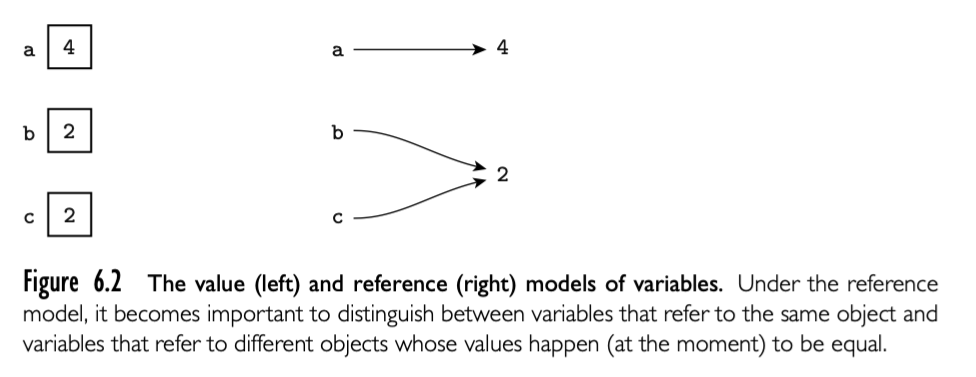
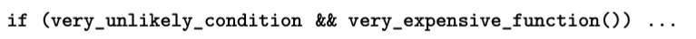

Foreword
编程语言被认为计算机科学家必须掌握的一个核心课程。原因很明显：编程语言是我们用于开发新产品和交流新想法的载体。他们通过数百万行的代码描述该领域的问题并施加影响。他们的成功归功于计算机科学界在创建新语言和实施方面的长期努力。
已经有超过 75 种编程语言被讨论。它们代表了过去数十年在语言设计领域最好和最具影响力的贡献。最开始是 1950 年代的 Fortran 和 Lisp，随后又出现了多种语言，以及用于动态编程的 Web 语言。75 种语言中包含的范式有命令性，函数式，逻辑性，静态，动态，序列，共享内存并发，分布内存并发，数据流，high-level 和交互式语言。同时包括了不同的领域，科学计算，符号操作，数据库访问等。语言的多样性对于程序员的生产力是很重要的，并且这些也是计算机学科重要的资产。
本书介绍了流程控制，类型和抽象机制。这些是开发出组织良好，模块化，易于理解，易于维护程序的必要表征。对于当今语言这些核心特性的理解是成为更好的开发者以及更好理解计算机科学的基本前提。
必须与设计范式一起研究实现编程语言的策略。原因是一门语言的成功取决于实现的质量。同样，策略的选择会限制语言的设计。语言的实现开始于解析（parsing）和词法扫描（lexical scanning）来计算出程序的句法（syntactic）结构。今天的解析技术，在 Part I 中讨论，是有史以来最优雅的算法之一，是使用数学对象创建实用工具的例子之一。仅仅作为智力成果就值得学习。当然它们具有巨大的实用价值，也是欣赏这些实现第一版 Fortran 编译器中使用的伟大策略的一个好途径。
实现的另一个组成部分是将 high-level 语言转换成适用机器执行语言的编译器组件。这种转换可以率先完成（静态语言），也可以执行期间完成（动态语言），也可以兼而有之。本书讨论了包括通过解析驱动的转换的优雅机制的方法和实现。为了生成高效代码，转换策略避免冗余计算，高效利用内存的层次，并且利用处理器的并发能力。这些有时候矛盾的目标被编译器的优化组件接管。尽管这些内容并不应该包括在编译器的第一课中，本书还是在第四部分（Part IV）给出了不错的概述。
计算近期最重要的发展是并发能力的普及和利用，在可预期的将来，利用并发性将带来性能提升。本书通过向读者展示并发编程的一系列主题来回应这一发展，包括跨线程同步，通信和线程间协调。这些信息随着并行计算的普及变得越来越重要。
编程语言是开发者和机器之间的桥梁。算法必须表现为可执行文件。编程语言设计的学习和实现将给你一个很好的对于连接计算策略理解。通过对该主题广泛的表述， Michael Scott 的这本书，是对编程语言学的巨大贡献。
编程语言实用主义的主要前提的语言设计和实现是紧密相关的，分离开是难以学习的。
Part II 和 Part III 的组织是围绕语言设计的，但是很多问题是通过实现来描述。
第一部分覆盖了设计和实现的基本概念。第一章激发编程语言学习的热情，介绍了主流语言家族，提供了编译过程的概述。第三章覆盖了高层次语言结构，重点是 names, binding of names to objects, 和 scope rules。在这个过程中涉及到了存储管理，subroutines，模块，类，多态和分离编译。
第2，4，5章更侧重实现。它们提供了 Part II 和 Part III 提到的背景和实现问题。第二章讨论程序的语法（句法 syntax），文本结构。介绍了正则表达式和上下文无关语法，设计师用来描述程序语法，并结合编译器或者解释器的扫描和解析算法来识别句法。给定了对于句法的理解，第4章解释编译器（或解释器）如何确定程序的语义。这个讨论围绕属性语法概念进行，用来将程序映射成具有意义的内容，比如数学或者其他存在的语言。最后，第5章（完全站在同伴的角度）提供了汇编级别计算的架构，重点介绍了与编译器最相关的现代微处理器的特性。理解这些的开发者不仅会对语言为什么这样设计有更好的理解，而且可以充分利用语言。
介绍
第一台电子计算机非常巨大，占满了几件屋子，耗电巨大，花费了1940年代的巨款（但是计算性能也就现在的手机水平）。使用这种机器的编程人员认为机器的时间比人的更有价值，他们使用机器语言进行编程。机器语言就是比特序列，可以直接控制处理器在适当时间进行加法，比较，移动数据。这种程序的编写是一项无聊且庞大的任务。下面这段程序计算使用欧几里得算法两个整数的公共除数（GCD）。使用机器语言编写，通过16进制数表达的，可以运行在x86指令集处理器。

当人们开始编写大型程序时，显然需要更不易出错的符号集。于是使用容易记忆的缩写的符号的汇编语言被发明。使用汇编编写 GCD 程序如下图：

汇编语言最初被设计为机器指令与方便记忆缩写一对一。将缩写翻译成机器指令的系统程序被称为汇编器（assembler）。Assembler 通过宏扩展的能力允许开发者为常见指令定义参数化的缩写。但是汇编语言和机器语言的关系仍然很明确。编程仍然是以机器为中心：每种不同的计算机有自己的汇编语言，编程人员必须以计算机的方式思考。
随着计算机的进步以及竞争设计的发展，必须为每种新的计算机重写程序让人沮丧。人们也越来越难以记忆汇编语言的大量细节。人们开始希望有一种机器无关的语言，其中数值计算（当时最常见的程序）可以使用类似数学公司的表达。这直接推动了 1950 年代第一门高级语言 Fortran 语言的诞生，随后 Lisp 和 Algo 也随即出现。
将高级语言转换成汇编或者机器码是编译器（compiler）的工作。compiler 比 assembler 要复杂的多，因为不存在源文件到机器指令的一对一关系。Fortran 开始很慢，因为人类总是可以付出一定的努力写出对应的汇编程序，这些程序的运行速度要比 compiler 产生的快。但是随着时间流逝，性能的差距在变小，甚至 compiler 产生的程序更快。由于硬件复杂性的提升（pipeline, multiple functional units 等）和 compiler 技术的改进，compiler 通常会生成比人类写的更好的代码。即使有些场景人类写的更快，机器性能的提升以及程序规模的增大使得这种努力微不足道，因为程序不仅仅写出来就完成工作，还包括了后续的维护，修复和改进，现在人工的成本早就超过了计算机本身。
语言设计的现状
今天有成千上百种编程语言，而且新语言还在不断被发明。为什么需要这么多？有几个可能的回答：
- Evolution
- Special Purposes
- Personal Preference
- Expressive Power
- Ease of Use for the Novice
- Ease of Implementation
- Standardization
- Open Source
- Excellent Compilers（优秀的编译器）。Fortran 的成功归功于优秀的编译器。在某种程度上这是历史问题。Fortran 已经存在了太久，公司已经花费了太多的时间和金钱使得编译器生成性能很高的代码。但是这也是语言设计的问题，在90年代之前 Fortran 没有递归和指针，这些功能会影响代码生成（起码对于不需要这些功能的程序）。同样某些语言，比如 Lisp 的成功，部分原因就是它们具有编译器以及具有帮助编程人员管理大型程序的工具。
- Economics, Patronage, and Inertia（经济学，资助和惯性）。最后，除了技术有点之外，其他因素极大影响了成功。强大的赞助商就是一个因素。PL/I 首先归功于 IBM，Cobol 和 Ada 归功于美国国防部，C# 归功于微软。近些年，Object-C 作为 iPhone 和 iPad 的官方语言也越来越流行。生命周期的另一环在于，即使有了更好的替代品，但是已经有了太多的遗留设施，替换的成本太高，比如世界金融基础设施还有很多 Cobol 发挥着作用。
清楚的看到没有单一因素决定一门语言是不是够好。同样在学习语言的过程中，我们也要从几个角度来考虑问题。尤其是，我们应该考虑程序员和语言实现者的观点。有时候这些观点比较统一的，比如对于执行速度的追求。然而，通常情况下存在冲突和权衡，比如新功能的实现和成本之间的权衡。功能的实现提升的成本不只是使用这个功能的程序，还有不使用这种功能的程序。
在早期，实现语言者的观点是主要的。编程语言演变为告诉计算机怎么做的一种手段。对于开发者，语言更像是表达算法的一种手段。就像自然语言约束了观点的表达与论述，编程语言也约束了容易和不容易表达的内容，同时也对程序员的想法具有深远微妙的影响。Donald Knuth 将编程视作一种告诉其他人计算机如何工作的艺术。这个定义也许是最好的，它承认概念的清晰和实现效率都是基本问题。本书试图抓住折中的精神，考虑每个主题的概念和实现两方面内容。
编程语言范围
很多现存的语言可以根据计算模型分类。下图展示了一些公共的家族。第一级按照声明式还是命令式分开，声明式表示计算机做什么，命令式表示计算机如何做。

声明式语言某种程度上来说是“更高级别”的语言；它们更符合程序员的观点，而不是实现者观点。但是出于性能问题，命令式语言才是主流。在避免“无关”的实现细节的愿望与尽可能控制算法细节之间声明式语言可以保持张力。毕竟计算机科学的大部分内容是高效算法的设计。我们实际并不清楚对于什么内容，什么问题范围，对于 compiler 需要在高层次问题抽象上发现良好算法。对于 compiler 不能发挥最用的问题领域，开发者需要定制一个。
在声明和命令式家族之下，还有一些子家族：
- 函数式语言采用机遇函数递归定义的计算模型。由 1930 年代的 lambda calculus 演算启发。程序本质上被视作映射输入到输出的函数，这个函数是通过过程定义。本类别的语言有 Lisp, ML, Haskell.
- 数据流语言计算模型是信息在处理节点的信息流动。天然就是并行的：节点被输入触发，然后并行执行。Id Val 是数据流语言。Sisal 是 Val 的后继者，更多的被看作函数式语言。
- Logic or constraint-based 语言从谓词中得到灵感。计算模型是通过目标定向的逻辑规则列表来查找满足某些关系的值。Prolog 是最知名的 logic 语言。这个术语有时候也用于 SQL 数据库语言，XSLT 脚本语言，Excel 编程语言。
- von Neumann 语言（冯 诺伊曼语言）可能是最广泛的语言。包括 Fortran， Ada， C 以及所有通过变量修饰的语言。不同于函数式语言基于 expressions ，冯诺伊曼语言基于 statements，通过改变内存的值来影响一系列计算序列。
- 面向对象语言来源于 Simula 67.更接近冯诺伊曼语言，但是内存和计算更结构化。并没有将计算看作在处理器上的操作，而是抽象为对象之间的交互，每个对象有自身的内部状态和子例程管理状态。Smalltak 是最纯碎的面向对象的语言；C++ 和 Java 应用最广泛。也可以设计面向对象的函数式语言（最知名的是 CLOS 和 OCaml），但是通常它们具有强烈的命令式味道。
- 脚本语言强调“粘合在一起”功能。脚本语言最初因为特定目的被发明出来：csh 和 bash 作为 job control 从 shell； PHP 和 JS 生产动态 web 内容；Lua 用于控制计算机游戏。其他语言，包括Perl，Python，Ruby 更通用。大多数原型开发更偏向开发速度而不是执行速度。
可能会疑问并发语言为什么没有单独分一个家族（事实上本书有一章专门讨论这个话题），但是并行还是顺序执行跟上面的分类是无关的。大多数并发程序是使用库或 compiler 联合顺序语言比如 Fortran 或 C 编写的。一些广泛应用的语言，比如 Java，C#， Ada 具有显式的并发特性。研究人员正在研究每种语言的并发能力。
作为语言家族对比的简单例子，考虑 GCD 问题。冯诺伊曼语言，函数式，logic 语言对于这个问题的表达不仅影响了代码表示，还影响了程序猿的思想。冯诺伊曼语言的算法版本完全是命令式：
计算 a 和 b 的 gcd，检查 a 和 b 是否相等。如果相等，打印其中一个，停止。否则选择较大的和差值重复上面的过程。
C 代码如下:
// c code
int gcd(int a, int b) {
while(a != b) {
if (a > b) a = a - b;
else b = b - a;
}
return a;
}
函数式语言，重点是输出到输入的数学关系：
a 和 b 的 gcd 定义为：
- 当 a = b ，a
- 当 a > b, b 和 a - b 的 gcd
- 当 b > a, a 和 b - a 的 gcd
当计算 gcd 时，扩展这个定义即可
OCaml 版本如下，let 表示定义；rec 表示递归；函数参数在名字和等号之间
* OCaml code *
let rec gcd a b =
if a = b then a
else if a > b then gcd b (a - b)
else gcd a (b - 1)
Logic 语言，程序员制定一组公理和证明规则，可以让系统发现结果：
gcd(a,b,g) 的论点是 （1）a,b,g 都相等 （2）a 大于 b，就存在一个 c = a - b 然后 gcd(c,b,g) 为真 ，或者 （3）a 小于 b，就存在 c = b - a 然后 gcd(c, a, g) 为真。为了计算 gcd，搜索 g 满足 gcd(a,b,g) 为真
Prolog 版本的代码如下：
% prolog
gcd(A,B,G) :- A = B, G = A
gcd(A,B,G) :- A > B, C is A-B, gcd(C,B,G)
gcd(A,B,G) :- A < B, C is B-A, gcd(C,A,G)
应该强调的是语言家族的区分并不明确。例如冯诺伊曼语言和面向对象语言之间的界限很模糊，而且很多脚本语言也是面向对象的。大多数函数式或者 logic 语言包含命令式特性，最近的一些命令式语言包含了函数式特性。上面的描述是为了抓住家族的共有味道，而不是为了提供正式定义。
命令式语言--冯诺伊曼和面向对象--是本书的大部分内容。但是有兴趣的读者可以发现本书的大多数章节的替代计算模型问题涉及了跨家族问题。11-14章包含了函数式，logic，并发和脚本语言。
为什么要学习编程语言？
编程语言是计算机科学的中心，也是典型的计算机课程。
编程语言语法
不像英语或者汉语这种自然语言，计算机语言必须是精确的。它们的结构（语法）和意义（语义）必须是无异议的，从而开发者和计算机可以知道一个程序要做什么。为了提供这种精确，语言设计者和实现者使用正式的语法和语义符号。为了便于讨论语言的特性，我们本章首先介绍语法，然后第4章介绍语义。
一个示例，考虑阿拉伯数字的语法表示。这些数(numberal)由数字(digit)组成，可以通过这种方式枚举（'|'表示或）
digit -> 0 | 1 | 2 | 3 | 4 | 5 | 6 | 7 | 8| 9
digit 是表示 number 的语法块。通常意义上，我们说自然数是由任意长度的非空 digit 字符串表示，以非零 digit 开始：
non_zero_digit -> 1 | 2 | 3 | 4 | 5 | 6 | 7 | 8| 9
natural_number -> non_zero_digit digit*
最后的 * 号表示其左侧符号零次或者多次重复。
当然，digit 仅仅是符号：纸上的墨水点或者屏幕上的像素。本身没有意义。我们需要为其添加语义，表示从零到九的自然数，由数学家定义。另外，我们也可以说它们表示颜色，或者日历中一周的日子。这些组成了相同语法的不同语义。类似的，我们来定义自然数的语义基于10，每个 digit 字符串的解释。可以为有理数，精度有限的实数，算术，赋值，控制流，声明，甚至所有的编程语言通过类似方式设计语法规则和语义解释。
区分语法和语义至少两个原因。首先，不同的编程语言经常通过不同的语法提供类似的语义。如果人们能够识别出不同语法的相似语义就能更容易的学习新语言。其次，存在一些高效优雅的算法帮助 compiler 或者 interpreter 发现计算机程序的语法结构（但是不是语义！），这些算法可以驱动编译或者解释过程。
本章我们集中于语法：我们如何设计编程语言的结构规则，compiler 如何识别给定程序的结构。有两个任务--确定语法规则然后根据这些规则解析给定的程序--是有区别的。对想要编写有效程序的程序员对一个任务感兴趣，compiler 对第二个任务感兴趣。第一个任务依赖 regular expression 和 context-free grammars，这些表明了如何构建有效的程序。第二个任务依赖 scanners 和 parsers，可以识别程序的结构。我们在 2.1 展开第一个任务，2.2 和 2.3 展开第二个任务。
在 2.4 ，我们更深入的讨论 scanning 和 parsing 的理论知识。在理论上，scanner 是有限状态机(DFA)，识别出程序的 token。parser 是确定的 push-down automaton(PDA)，识别出程序的上下文无关语法。并且证明了可以从 regular expression 和 context-free grammars 生成 scanner 和 parser。这个任务可以通过 Unix 下的 lex yacc工具完成。可能除了计算机没有其他领域理论与实践之间的联系如此紧密清晰。
2.1 指定语法：正则表达式和上下文无关语法
语法的形式规范需要一组规则。语法复杂性（表现力）取决于我们使用的规则。可以证明，我们直觉认为 tokens 可以通过三种规则来从单个字符集中构建：concatenation, alternation（在有限方案中选择）, 和被称为 "Kleene closure"（重复任意次数）。指定剩余的语法还需要一个额外的规则： recursion（通过相同结构构造简单实例）。前三种规则定义的字符串集合被称为 regular set，或者 regular language。Regular set 可以由正则表达式生成，并由 scanner 识别。然后给字符串集合加上递归被称为 context-free grammars(CFGs)，并且由 parser 识别。（这里的术语可能会比较困惑。“语言”这个单词的意义要放在上下文中考虑。formal 语言只是字符串集合，没有被赋予语义）。
2.1.1 Tokens 和 Regular Expressions
Tokens 是组成程序的基本块--具有含义的最短字符串。
2.1.2 Context-Free Grammars
Regular expressions 用来定义 tokens 很好。但是不能确定嵌套结构，这才是编程语言的核心。考虑一个数学表达式的结构例子：
expr -> id | number | - expr | (expr)
| expr op expr
op -> + | - | * | /
根据结构本身定义结构的能力至关重要。除了其他事项外，也能使我们确保左右括号匹配，有些不能仅通过 regular expressions 完成的事情。箭头符号（->）表示“可以具有形式”。
在 Context-free grammar 的每个规则被看作产品。作词符号是variables或者non-terminals。可能存在任意数量。构成从语法衍生出的符号称为 terminals。不能出现在左侧。编程语言中，上下文无关的 terminals 是语言的 tokens。nonterminal 的其中之一，在左侧的第一个出现被称为 start symbol。命名了语法定义的结构。
上下文无关语法符号被称为 Backus-Naur Form(BNF)，为了纪念 John Backus 和 Peter Naur,他们发明了 Algol-60 语言。严格来说*和元级别的括号不在 BNF 范围，但是它们不改变符号的表达能力，然后为了方便就看作一样的。有时还包括 +，表示前面符合的一个或者多个重复。当通过额外的操作扩展时，符号被称作 extended BNF(EBNF)。这个结构:
id_list -> id (, id)*
展开后
id_list -> id
id_list -> id_list, id
+是类似的。注意这里的括号时元符号。
就像*和括号，|貌似也比较多余。结构同样可以展开为不需要竖线的表示：
op -> + | - | * | /
# shorthand
op -> +
op -> -
op -> *
op -> /
# 或者
op -> +
-> -
-> *
-> /
很多 tokens，比如上面的 id 和 number，有很多可能的拼写（即很多可能的字符串表示）。parser 不关心这个。语义分析才会区分它们，scanner 必须保存每个这样“有趣”的拼写 tokens 以供后面使用。
2.1.3 Derivations 和 Parse Trees
2.2 Scanning
scanner 和 parser 联合起来可以用来发现一个程序的句法结构。发现的过程或者称为syntax analysis，是将程序转化为目标等效程序的重要第一步。通常来说，本书的剩余部分我们关注编译器而不是解释器。
通过将输入的字符聚合成 tokens，scanner 减少了计算密集型的 parser 必须处理的 item 数量。而且，scanner 会删除注释（因此 parser 不必担心它们在 CFG 中出现）。保存“感兴趣的”tokens 比如 identifier，string，numeric literal，带有行列信息的 tags tokens，方便后续处理中生成更友好的错误信息。我们将会创造一门简单的“计算语言”，有输入，输出，变量和赋值。比如下面的 tokens 定义：

与 Algol 家族保持一致，我们使用 := 而不是 =表示赋值。简单起见，我们省略了指数运算符，还列出了 read 和 write 作为id规则。注释的规则如下：
我们如何识别计算器语言的 tokens？最简单的方法是 ad hoc。伪代码如下所示

此代码很容易扩展成需要的逻辑，但是生产级编译器中更多使用自动生成状态机代码，从而方便的改变 tokens 定义，可以自动生成新的 scanner 代码。token 通常使用 “最长匹配原则”。
2.4 理论基础
我们现在讨论的 scanner，parser，regular expression，以及 context-free grammar 都是基于自动化理论的形式化部分。在自动化理论中，所有的形式化语言都是从有限 alphabet衍生出来的字符串集合。【略】
诸如 Fortran，Algol 和 Lisp 这种早期语言使用“高级别”这个术语是因为有别于汇编这种硬件相关语言，它们的语法和语义更加抽象。抽象使得它们可以写出应用于多种机器的程序，也使得程序更加容易让人类理解。机器无关性很重要，不过更重要的是编程易用推动了现代编程语言的发展。本章是首次涉及到语言设计（剩下的在6-10章）。大多数将围绕 name
name 是用于指代某些事物的助记字符串。在大多数语言中 name 作为 identifiers （包括字母和数字的 token），即使比如 + := 也可以作为 name。name 允许我们关联到 variable,constant,operations,types,以及底层的概念 address。name 也有上下文的第二个含义抽象。在这种含义下，抽象是指程序员将编译后的代码片段（funtion）与 name 关联的过程。通过隐藏不相关细节，抽象降低了概念的复杂性，开发者可以在特定时间只关注程序的一个子集。Subroutines 是control abstractions：允许程序员将复杂的实现隐藏在简单的接口后面。Class 是 data abstractions:允许程序员将数据隐藏在一系列操作之后。
我们将要看到 name 相关的几个主要问题。3.1 介绍了 binding time的概念，不仅仅是 name 如何关联起表示的东西，还包括解决任何设计实现。3.2 描述了几种分配释放对象存储空间的机制，然后区分了对象的生命周期和binding name 到对象的生命周期。大多数高级语言 name-to-object 绑定只会在限定 scope 生效。3.3 探索了 scope 规则来定义 region。3.4 考虑它们的实现。
在程序中给定点的完整绑定集合为看作当前的 referencing environment. 3.5 讨论 alias，更多的是一个 name 在给定 scope 关联一个 object，以及重载（在给定 scope 一个 name 可以关联多个 object），这取决于上下文。3.6 通过提出一个 referencing environment 可能绑定了subroutine 的参数，函数返回值或者存储的 variable， 扩展了 scope 规则的概念。3.7 讨论宏扩展，通过文本替换引入新 name，有时与语言的其他部分有点奇怪。最后，3.8 讨论了集中编写。
3.1 The Notion of Binding Time
3.2 Object Lifetimes and Storage Management
3.3 Scope Rules
3.4 Implementing Scope
3.5 The Meaning of Names within a Scope
3.6 The Binding of Referencing Environments
3.7 Macro Expansion
3.8 Separate Compilation
如同第一章描述一样，编译器简单来说就是个翻译器。将用一种语言写出的程序转换成另一种语言。被转换的语言可以是任何语言，比如一门高层次语言，phototypesetting 命令，VLSI（芯片）布局，但是大多数时候是可用计算机的机器语言。
正如有很多不同的编程语言一样，也有很多种机器语言，尽管机器语言的多样性要少很多。每种机器语言对应不同的处理器架构。正式来说，架构就是硬件与软件的接口，即编译器生成的或者程序员为裸机手写的语言。处理器的实现是架构在硬件的实现。为了生成正确的代码，编译器作者只需要理解目标架构。为了生成高效的代码，还要了解实现，因为这决定了生成代码的执行速度。
网站有更详细的介绍，比如 x86 的 CSIC 指令集，以及 ARM 的 RISC 指令集。
更详细的请看chapter5
在第一部分的基础上，我们现在来讨论大多数编程语言核心的问题：控制流，数据类型，以及控制和数据的抽象。
第6章讨论控制流，包括 expression evaluation, sequencing, selection, iteration, and recursion. 很多时候我们看到设计决策反映了对于互补或者竞争策略概念和效率上的权衡。引用和值的区别，提前或者懒惰计算问题会在后续章节反复出现。
接下来两章讨论类型。第7章包括类型系统和类型检查，包括等效性，兼容性和类型推断等概念。还讨论了显式和隐式形式的参数多态。第8章介绍了 compsite type 的最新研究，包括 records, variants, arrays, strings, sets, pointers, lists, files。指针部分介绍了垃圾收集技术。
控制和数据都可以抽象，即复杂性隐藏在简单以及定义明确的接口之后的过程。控制抽象是第9章的内容。subroutines 是最常见的控制抽象，但是我们也要考虑 exception 和 coroutine，然后简单回顾第6章介绍的 continuations and iterators。subroutines 主要包括调用顺序和参数传递机制。
第10章回到数据抽象。很多现代编程语言是面向对象的，通过封装机制，继承，和方法的动态分发（子类型多态）。我们对于面向对象编程语言的讨论主要包括构造器，访问控制，范型，闭包，以及 mix-in 和多继承。
已经探究了编译器用来进行语法分析的机制以及必须生成目标机器代码的特性。我们现在返回到语言设计中的核心问题。具体来说，本章讨论控制流问题，或者叫做程序执行顺序。顺序对于大多数计算模型是很重要的。决定了为了完成一些任务，那条指令先执行，那条后执行。我们可以将语言中顺序的机制划分几类：
- Sequencing：statement 按照确定顺序执行（或者 expression evaluated），通常就是程序呈现的顺序
- Selection：根据执行期间的条件，在两个或者多个 statement 或 expression 之间选择。最常见的选择结构是
ifcase(switch)statement。选择有时候也被称为 alternation - Iteration：给定的代码片段重复执行特定次数或者满足执行期间的条件。迭代结构包括
for/do, while, repeat - Procedural abstraction：一系列复杂控制结构的封装（subroutine ），可以作为单独的单元，而且可以接受参数
- Recursion：expression 被自己直接或者间接定义；计算模型使用栈来保存部分计算信息。递归通常使用子引用 subroutine 来定义
- Concurrency：两个或者多个程序片段“同时”执行，要不在不同处理器分开执行，要不在同一处理器实现相同的并行效果
- Exception handling and speculation：程序片段假定一些条件为真乐观执行，如果条件为假，执行分支转到执行保护片段（excepiton handling），或者代替为保护片段（speculation）。对于 speculation，语言实现必须可以 undo，或者 “roll back”被保护代码的可见部分。
- Nondeterminacy：statement 或者 expression 的顺序或者选择故意不指定，表示都可以导致正确结果。从某种意义上来说，有些语言要求选择随机公平。
尽管句法和语法细节语言之间大有不同，但这些类别的顺序控制结构可以在大多数语言中发现。一个程序猿如果从这些类别来学习新语言，评估语言之间设计的权衡，算法的选择，而不是陷入到语言的语法细节中会更容易。
Subroutines 是第9章的内容，并发是第 13 章的内容。异常处理在 9.4 和 13.4.4 中会分别讨论。本章会讨论剩下的几种类别。在 6.1 我们来讨论表达式的求值（expression）-- 所有高级顺序的基础表达块。来讨论 expression 的句法表示，操作符的优先级和关联性，操作数的执行顺序以及赋值的语法。尤其需要关注的是关联值的变量和关联引用的变量之间的区别。在 6.2 我们讨论结构化和非结构化（goto）的控制流程。
不同类别的控制流在不同语言中的重要性差别很大。sequencing 是命令式语言（冯诺依曼，面向对象语言）的核心，但是在函数式语言中的角色就小一些，函数式语言强调 evaluation of expression，否定或者消除影响程序输出的 statements。类似的，函数式语言大量使用递归，命令式语言更喜欢迭代。逻辑语言倾向于消除或者隐藏顺序控制：开发者描述推理规则，语言实现负责找到应用这些规则的顺序。
6.1.1 Precedence and Associativity
- expression
- statement (side effect)
6.1.2 Assignments
-
reference or value 
b := 2 c := b a := b + creference model immutable is important. Reference model every variable is an l-value.
-
Boxing
-
Orthogonality 正交 Algol 68 都是 expression C 同时使用 expression statement， C 提供了特殊的 expression forms for selection and sequencing.
-
combination assignment operators += ++ -- .eg.
-
multiway assignment
6.1.3 Initialization
initialization assignment in c++ is different, assigenment should decollate first.
Java and C# 不区分
6.1.4 Ordering within Expressions
顺序很重要：
- side effects:
a-f(b)-c*d如果f(b)影响 d，这个表达式结果就取决于 f(b) 和 c*d 哪个先执行 - code improvement: the order of evaluation of subexpressions has an impact on both register allocation and instruction scheduling. 先后顺序影响代码优化，代码优化不会提供哪个先执行的保证，只保证正确性同时尽可能提升运行速度。
所以，大多数编程语言的 order of evaluation of operands and arguments is undefined.
applying mathematical identities
数学交换律，分配律，相关率。但是在计算机中随便重排操作可能会出现 overflow。或者浮点数在计算机中的表示是近似数，同一个表达式，不同顺序的运算可能会导致不同的结果。
6.1.5 Short-Circuit Evaluation
boolean expression 提供了特殊而且重要的代码优化方法 -- 短路。

这种形式的计算，可能会节省运行时间。
但是也有不提供短路能力的语言，比如 Pascal
p := my_list
while (p <> nil) and (p^.key <> val) do
p := p^.next
这种写法就不对，因为两个条件都会执行，就会执行 p = nil 的情况。
但是短路也不总是正面的。比如两个条件 E1 和 E2 都有 side effect， 所以希望同时计算，再判断。有些语言提供了短路和非短路两种选择，比如 Ada 中使用 and / or 表示常规，and then / or else 表示短路。在 C 中，可以使用 & | 可以作为 && || 的非短路选择。
unconditional jump: statement label and goto
在1960 年代进行激烈的讨论，最终 goto 被放弃，这也是被称为“结构化编程”软件革命的一部分。结构化编程在 1970 年代流行起来，1990 年代流行面向对象编程。结构化编程强调从上到下设计(渐进式细化)，代码模块化，结构体类型，描述式变量，和不变名称，以及很多注释。结构化编程的开发者可以在 subroutine 中，只使用 顺序，选择，迭代 表达设计良好的命令式算法。不会使用标签，结构化编程依赖嵌套结构的词法边界作为分支控制的目标。
现代程序员熟悉的很多结构化控制流均由 Algol 60 创建。包括
if ... then ... else ...
for ...
while ...
case(switch)
6.2.1 Structured Alternatives to goto
goto 到 subroutine 结尾引入了 return statement
goto 跳出 loop 引入了 break / exit statement (以及 continue )，有些语言甚至可以从嵌套 subroutine 调用中跳出 exception
Multilevel returns
如果发生 nonlocal goto ，语言就必须提供 repair the run-time stack of subroutine call information, the repair operation 被称为 unwinding。
Common Lisp 引入了 catch/throw 机制，Ruby 中也使用，这个机制需要匹配 catch label
Errors and Other Excepitons
多层返回假定调用者知道被调返回什么。但是程序执行异常情况需要被恢复成执行环境。
最直观但是不让人满意的方式是这种
status := my_proc(args);
if status = ok then ...
辅助布尔值可以使用 nonlocal goto 或者多层返回值代替，但是调用方必须显式处理返回值状态。作为结构化替代，很多现代编程语言提供了 exception handling 机制方便处理这种情况，可以恢复意外情况。我们在 9.4 详细讨论 exception handling。开发者通常要提供异常 handler 来从异常中恢复。
多层返回和异常处理有很大的相似性。都是一种从嵌套内层跳到外层的机制。不同之处在于，多层返回内部上下文有所有信息，完成计算，如果正确返回正确值，返回到外层上下文不需要后续处理；异常机制相反，内层上下文不会完成所有工作，执行正常处理，然后抛出异常到外层上下文。
Common Lisp 和 Ruby 都支持，这很少见。大多数语言只支持异常机制；开发者需要自己编写程序处理多层返回。不幸的是，Common Lisp 和 Ruby 使用了 catch/throw 关键字来支持多层返回，而大多数语言使用这两个关键字来支持异常机制。
6.2.2 Continuations
The notion of nonlocal gotos that unwind the stack can be generalized by defining what are known as continuations. In low-level terms, a continuation consists of a code address, a referencing environment that should be established (or restored) when jumping to that address, and a reference to another continuation that represents what to do in the event of a subsequent subroutine return. (The chain of return continuations constitutes a backtrace of the run-time stack.) In higher-level terms, a continuation is an abstraction that captures a context in which execution might continue. Continuations are fundamental to denotational semantics. Scheme 和 Ruby 天然支持，允许开发者定义新的控制流结构。
就像 assignment，sequencing 也是命令式语言的核心。大多数命令式语言中，statements 列表通过 begin...end 或者 {...} 分割，然后可以用在单 statement 位置，称为 compound statement，有时候也称为 block。
If 语句
6.4.1 短路条件
大多数条件语句中的条件不需要存储，所以也不需要参与 register allocation，所以可以生成高效的代码（jump code），而且特别适合 6.1.5 提到的短路。jump code 不仅适用于条件语句，还适合循环，我们在 6.5.5 讨论
在代码生成的一般结果中，由于根表达式的合成属性，最终结果需要寄存器保存，然后上下文使用寄存器名称获得值。在 jump code ，由于根表达式继承属性通知分支。比如，下面代码
if ((A > B) and (C > D)) or (E != F) then
then_clause
else
else_clause
没有短路计算的语言中，生成的代码如下：
r1 := A
r2 := B
r1 := r1 > r2
r2 := C
r3 := D
r2 := r2 > r3
r1 := r1 & r2
r2 := E
r3 := F
r2 := r2 != r3
r1 := r1 | r2
if r1 = 0 goto L2
L1: then_clause
goto L3
L2: else_clause
L3:
jump code 生成的代码如下：
r1 := A
r2 := B
if r1 <= r2 goto L4
r1 := C
r2 := D
if r1 > r2 goto L1
L4: r1 := E
r2 := F
if r1 = r2 goto L2
L1: then_clause
goto L3
L2: else clause
L3:
布尔值不会显式存在寄存器，而是直接在控制流中使用。
6.4.2 case/switch statements
case 语法可以将冗长的 if else 语句简化，但是优化语法写法并不是 case 语句的主要动机。只要动机是生成更高效的目标代码。if else 语句很自然的生成如下代码
不会像 if else 依次计算每个分支条件，case 语句计算条件结果，然后直接使用一条指令跳转到目标分支。
label T 位置的代码实际上是一个 jump 表。L6 的代码检查以确保控制表达式的结果在 jump 表中。
Alternative Implementations
jump 表很快，而且节省空间。寻找执行分支的替代技术包括，sequential testing, hashing, binary search。sequential test 类似 if else 语句生成的季过，如果 label 数量较少，可以采用；hash 可以在 O（1） 时间找到，但是 hash table 就像 jump table，要求单独额外的空间存储表，使得不适用于很大范围的 label；binary search 也可以很快找到。
为了 case 语句生成的代码更好，编译器通常要采用混合策略。编译过程会使用内部数据结构描述 label，然后选择采用那种哪种策略。
Syntax and Label Semantics
各个语言的 case 语句时不同的，不同的语言使用不同 punctuation 来区分 label 和 arm。更重要的是，语言对于是否支持范围，是否允许默认分支，以及如何处理没有任何匹配的情况。
C switch Statement
case 语句在 C（以及 C++ 和 Java）中在几个方面不太常见：
switch (.../*controlling expression*/) {
case 1: clause_A
break;
case 2:
case 7: clause_B
break;
case 3:
case 4:
case 5: clause_C
break;
case 10: clause_D
break;
default: clause_E
break;
}
swith 表达式必须是一个值而不能是一个范围。实际上也没有标签列表，但是可以通过允许标签来实现。而且每个分支必须显式使用 break 跳出 switch 语句，否则就会继续执行。通常都要在每个分支加 break，忘记加这是很多奇怪 bug 的来源。C# 继承了 C 家族的语法，但是每个非空分支必须以 goto，continue，break 或者 return 结束。
迭代和递归是两种允许计算机重复执行相似操作的机制。如果没有这两种机制，那么程序的文本长度与运行时间就是线性关系。从非常实际的意义上来讲，迭代和递归不仅对固定尺寸的任务有用。本节主要讨论迭代，下一节讨论递归。
命令式语言的开发者更倾向于使用迭代（函数式语言更倾向于递归）。在大多数语言中，迭代使用循环这种格式。就像 statements in a sequence，循环也有 side effects：会影响变量的值。循环主要有两种形式，主要在确定迭代次数上有所不同。enumeration-controlled 循环在有限集上执行，一开始就知道循环次数。logically controlled 循环运行到某些条件达成。大多数语言为这两种循环提供不同的结构。
6.5.1 Enumeration-Controlled Loops
Enumeration-controlled 循环首先由 Fortran I 引入 do 循环。几乎后续所有语言都以某种形式支持了这种机制，只是语法上大有不同。即使 Fortran 自己的循环也随着时间发生了很大的变化。现代 Fortran 的版本是这样的：
do i = 1, 10, 2
...
enddo
变量 i 在循环中称为 index。等号之后的表达式是 i 的初始值，范围，和步进长度。上面的例子中 i = 1, 3, 5, 7, 9 ，然后结束循环。
很多其他语言提供了类似的机制，在 Modula-2 中是这样
FOR i:= first TO last BY step D0
...
END
根据 Clu 的指导，很多现代语言对于 enumeration-controlled 循环走向 iterator 这种更通用的有限集支持--比如在集合容器 tree 的节点。我们在 6.5.3 中讨论这个。现在我们专注于算术序列。
Code Generation for for loops


下面的版本更快，因为每次迭代只包含了一个条件分支，而不是顶部一个，底部一个两个条件分支。
请注意，这两种都采用了基本上单向的循环结束的测试：假设所有有效 i 小于 last。如果循环向另一个方向：first > last, step < 0 我们需要结尾的测试修改。为了使编译器做出正确的选择，很多语言严格要求算术序列。通常，step 要求是一个编译期常数。Ada 甚至限制必须是正负一。几种语言，比如 Ada 和 Pascal，需要特殊的关键字才能反方向迭代。
显然可以生成在运行时检查步骤正负的代码，并测试。但是要么时间要么空间效率不够。所以更有吸引力的方法，并被很多 Fortran 编译器采用，预计算迭代次数，将次数放到寄存器中，每次迭代结束减一，如果计数不是零就返回循环开始。

循环计数的方法避免了每次循环测试步长符号。假设我们预计算计数时比较谨慎，就可以避免一些算术溢出的问题。
Semantic Complications
机智的读者可能已经注意到了迭代次数基本依赖在迭代开始前就计算出来的迭代次数。在很多语言中，这种预测是可行的，比如 Ada 和 Fortran，但是 C 和其后继者中，这种预测不可行。差异的主要原因在于 for 循环是用于迭代，还是只是 enumeration 的简单处理？如果语言强调 enumeration，那么迭代次数好计算。如果是通用目的的 loop 循环，更具体的说，是如果迭代次数或 index 在循环执行过程会改变，那么我们需要更通用的实现，处理动态发现的终止条件。
要求仅在几个枚举值之间的选择会有几个问题：
- 除了通过枚举之外，可以以任何方式进入或者离开循环？
- 如果循环体修改了循环体结束位置判断是否循环的条件的值会发生什么？
- 如果循环体修改了 index 会发生什么？
- 程序是否需要在循环结束之后读 index 的值？如果需要，如何读？
问题1，2解决起来相对简单。大多数语言由 exit 或者 break 关键字提前离开循环。Fortran IV 允许 goto 跳进循环，但是这被看作语言缺陷，在 Fortran 77 中移除了。类似的，大多数语言要求界限只计算一次（C 除外），在第一次迭代之前，然后存为一个临时变量。后续对于界限的修改和计算都没有用。
问题 3，4 更复杂。假设我们这样写
for i:= 1 to 10 by 2
...
if i = 3
i := 6
在 i = 3 的迭代之后会发生什么？下一次迭代 i = 5 还是 8，甚至是 7？这都是合理的。为了避免这种问题，很多语言禁止了在循环体中修改 index。Fortran 使得这个规则称为程序员开发规则。
如果通过 exit/break 离开循环体，index 就是当前值。对于正常退出，index 就应该是大于界限的第一个值。不幸的是，如果是整数，可能存在溢出问题。其他类型的循环，可能语义上就是错误的：

要求 index 是最后一个界限值从实现上来说也不合理，生成的代码会变成这样：

当然算术溢出问题可能会干扰测试条件，所以编译器在某些情况必须生成类似代码。为了允许编译在所有情况生成最快的代码，有些语言，比如 Fortran 90 和 Pascal，index 正常结束术语未定义值。
Algol W 和 Algol 68 对于 index 修改和结束后使用问题率先提出了可行的解决方案，然后被 Ada ，Modula 3 和很多语言接受。循环的头部被认为包含了 index 的声明，它的类型从循环界限可以推断，scope 就是循环体。因为 index 不能在循环之外可见，值就不是问题了。
6.5.2 Combination Loops
Algol 60 提供了单个循环构造，这个结构包含了更现代的枚举和逻辑控制循环。允许开发者指定特定数量的枚举，每个可以是单个值，一个范围，或者一个终止条件的表达式。Common Lisp 提供了更强大的能力，4个分离部分，初始化 index，测试循环终止条件，循环体，循环体退出的清理。
更简单的形式被 C 和后继者采用，语义上，C 的循环是逻辑控制的。但是从设计上来说，使得枚举变得容易。比如 Mudula-2 的例子：
FOR i:= first TO last BY step D0
...
END
用 C 写就是
for (i = first; i <= last; i += step) {
...
}
等效于
{
i = first;
while(i <= last) {
...
i += step;
}
}
这个定义意味着程序员有责任担心溢出对于终止测试条件的影响。也意味着 index 或者用于终止测试的变量都可以被循环体修改，这些会影响循环控制。这些也是程序员的责任。
for 循环中的三个子句任何一个都可以是空的。另外，子句可以使用逗号分隔。C 的 for 循环比 while 循环的优势在于紧凑和清晰。尤其是所有影响循环的变量都在 for 循环头部中写。while 循环中，必须看开始和结尾才能知道结束条件。
虽然 C 循环的逻辑迭代语义消除了 index 在循环体结束后 index 使用的歧义，也使得 index 编程局部变量是方便的，只需要在 for 子句中声明即可。
6.5.3 Iterators
在上面的所有例子中，循环的迭代都是通过算术序列。有时候，我们可能想要迭代我们定义的集合上的所有元素。 Clu 引入了优雅的迭代器机制（Python，Ruby 和 C# 也用）。Euclid 和几种更现代的语言，包括 C++，Java 和 Ada 2012 定义了迭代器对象的标准接口，很易用，但是不容易写。Icon 提供了更泛化的迭代器，被称为生成器，结合了枚举和回溯搜索。
True Iterators
Clu，Python，Ruby 和 C# 允许容器抽象提供 iterator 方便便利。提供了 yield 。
实际上，一个迭代器就是一个单独的线程控制，有自己的 PC，与 index 关联。迭代器机制可以将需要元素的算法与对于元素的迭代解耦。
Iterator Objects
在大多数命令式语言中，迭代器既设计循环的特殊语法，也设计枚举循环的机制。概念被分开了。Euclid， C++，Java 和 Ada 2012 提供了类似枚举控制的机制，类似 Python。没有 yield 语句，没有单独的类似线程的上下文，迭代器就是一个对象，提供了方法来初始化，下一个 index 的生成，测试完成方法。调用之间，迭代器状态由对象自己保持。
【译者注：Java 的略】
C++ 采用了类似 Java 的方式。C++ 需要这样写：
tree_node *my_tree = ...
...
for (int n : *my_tree) {
cout << n << "\n";
}
Iterating with First-Class Functions
【略】
Iterating without Iterators
在既没有 true iterator 也没有 iterator objects 的语言中，我们也可以采用适当的约定来实现算法和迭代的解耦。在 C 中，我们可以定义 tree_iter 类型，然后这样写：
bin_tree *my_tree;
tree_iter ti;
...
for (ti_create(my_tree, &ti); !ti_done(ti); ti_next(&ti)) {
bin_tree *n = ti_val(ti);
...
}
ti_delete(&ti);
这个代码和更结构化的方案之间有两个主要区别：（1）循环的语法不够优雅（2）迭代器代码是简单类型有一些关联函数。
6.5.4 Generators in Icon
Icon 泛化了 Iterator 的概念，提供了一种机制，可以使得任意表达式按需列举枚举值。
更深入的讨论需要查看伴侣网站
6.5.5 Logically Controlled Loops
对比 enumeration-controlled 循环，logically controlled 循环具有更少的语义细节。要回答的唯一问题就是测试终止条件的循环体位置。大多数常见的做法是在每次迭代之前。while 在 Algol-W 中引入：
while condition do statement
为了使执行体可以包含多个 statement，大多数现代语言使用分隔符，比如 end 隔开，或者大括号。还有少数语言（比如 Python）通过锁进层次来划分执行体。
Post-test Loops
有时能够在循环底部测试终止条件很方便。Pascal 提供了特殊的语法，但是 Ada 又抛弃了这个语法。
repeat
readln(line)
until line[1] = '$';
// vs
readln(line)
while line[1] <> '$' do
readln(line);
当执行体很长的时候，两种结构就不一样了，注意到 post-test 循环至少执行一次。
C 提供了 while 的不同方式来支持 post-test
do {
line = read_line(stdin);
} while(line[0] != '$');
Mid-test Loops
正如我们在 6.2.1 中描述，有时候在循环中间执行条件测试也是合理的。很多语言中“mid-test”使用循环内部嵌套特殊语句完成：Ada 的 test， C 的 break，Perl 的 last。在 6.4.2 中我们也看到 C 中 break 也可以退出 case 语句。更方便的，C 还用 break 提出最近的 for,while, do 循环。
在有些语言中，exit 语句还可以可选的使用循环标签控制退出的循环，以达到可以退出多层循环的目的。在 Ada 中
outer: loop
get_line(line, length)
for i in 1..length loop
exit outer when line(i) = '$';
consume_char(line(i));
end loop;
end loop outer;
Perl 的 last 也有这种能力。Java 也扩展了 C/C++ 的 break，也支持标签。
不像已经讨论过的控制流机制，递归不需要特定语法。在任何提供 subroutine 抽象的语言中，只需要可以调用自己，或者调用其他函数（其他函数调用这个函数）就可以。大多数开发者在学习数据结构时了解到递归和迭代提供了等效的能力：任何迭代算法都可以使用递归重写，反之亦然。下面的小节中我们对比递归和迭代。然后考虑传递 unevaluated expression 个i函数的可能性，虽然因为实现开销通常不考虑，但是该技术有时可以让我们为仅在可能的输入子集中定义的函数优雅的代码，或者探索逻辑上无限的数据结构。
6.6.1 迭代和递归
正如我们在 3.2 提到，Fortran 77 和当时的其他语言不允许递归。很少有语言不支持迭代。当然，现代编程语言基本两个都支持。迭代在命令式语言中更自然，因为其基于对于变量的重复修改。递归在函数式语言中更自然，因为不改变变量。在最终分析中，使用哪一种看口味以及场景。
求和，迭代很自然，gcd 算法递归更自然。但是这两种都可以用另一种形式实现。
Tail Recursion
有时会争论迭代比递归更高效。更精确地说是迭代的常规实现通常比递归的常规实现更高效。在上面的求和和 gcd 例子中，迭代实现确实更高效，因为递归会在运行时创建调用栈来存储局部变量和栈信息。为函数式语言优化的编译器，通常可以为递归生成高效的代码。尾递归函数不需要递归调用：return 值就是递归调用返回。对于这样的函数，动态分配栈空间是不必要的：编译器在递归调用可以直接使用当前栈。事实上，好的编译器会重写
// recursive
int gcd(int a, int b) {
if (a == b) return a;
else if (a > b) return gcd(a - b, b);
else return gcd(a, b - a);
}
// ->
int gcd(int a, int b) {
start:
if (a == b) return a;
else if (a > b) {
a = a - b;
goto start;
} else {
b = b - a;
goto start;
}
}
通常不是尾递归的代码经过简单的转换就可以成为尾递归。最常见的转换称为 continuation-passing style。实际上，递归函数总是可以通过在递归之后做工作来避免在返回之后做任何工作。
有些特定的转换通常由函数式语言的熟练用户采用。【译者注：请参考原文，译者不熟悉 Scheme 语言】
Thinking Recursively
函数式语言的批评者有时会错误的争论，递归会导致算法效率较低的程序。比如，斐波那契数的数学定义就是递归的。如果常规实现，算法是指数复杂度的，同时存在线性复杂度的算法。

当然，Scheme 可以这样写得到 O(n) 复杂度的递归算法。对于习惯函数式编程的开发者这非常自然。有人可能会说，这不是“真正的”递归，这只是把迭代使用尾递归的格式写出来。这个论点有一定可取性。尽管算法类似，但是 C 语言迭代版本和上面尾递归版本有很大的不同：后面这种没有 side effect。每次对于 fib-helper 的调用建立了新的 scope ，包含新的变量。语言实现可以利用先前 scope 的实例，但是要保证互不影响。
6.6.2 Applicative- and Normal-Order Evaluation
到目前为止，我们在整个讨论都隐含一个假设，传递给 subroutine 的 expression 都已经完成了计算。这并不总是真的，实际上完全可以传递 unevaluated 的 expression 给 subroutine，然后在需要的时候再计算它。先计算被称为 applicative-order evaluation，后计算被称为 normal-order evaluation。【译者注：这里掠过 normal-order 的一些形式略述】
Algol 60 对于用户定义的函数默认使用 normal-order。大概做出这种选择是为了模仿宏的行为。1960 年代的大多数程序员主要在汇编器中开发，习惯了宏。
Lazy Evaluation
从清晰度和效率的角度来看，applicative-order 计算比 normal-order 更可取。在大多数语言中这更自然。但是在某些情况下，normal-order 计算可以获得更快的代码，或者 applicative-order 会导致运行时错误。这两种情况都是，normal-order 的计算可能都不需要执行。支持这种行为提供了 lazy evaluation 实现。在没有 side-effect 方面，normal-order 和 lazy evaluation 是同义词，但是实现跟踪已经计算的表达式，所以在同一个 referencing environment 如果需要多次可以重复利用不需要重复计算。
delay expression 有时候称为 promise 。lazy-evaluation 的一个重要应用就是 infinite or lazy 数据结构，这些数据结构可按需“实例”。list 或者 tree 这些数据结构就是例子。
【译者注：无限数据结构在 Rust 中也是比较困难的一个部分，可能跟这里的无限和 Rust 严格的语法有关系，todo 理清楚】
控制流最后一个分类是 nondeterminacy。是在选择之间故意未指定的结构。我们在 6.1.4 中已经看到例子，在大多数语言中，operator or subroutines arguments 可以任意顺序执行。
有些语言，比如 Algol 68 和几种并发编程语言，提供了 nondeterminacy 机制，以便更好的覆盖 statement
【译者注： Go 的 channel select ？】
网站附录 有更多内容
大多数编程语言都有表达式或者对象的类型的概念。类型有几个重要目的：
- 类型提供了很多操作的隐式上下文，开发者不需要显式表达。比如在 C 中，如果
a or b是整数a + b表示整数，或者a or b是浮点数a + b是浮点数。类似的 Pascalnew p，p 是指针，将会分配 p 指向类型的确定大小的内存，开发者不需要指定大小。在 C++ ，Java 和 C# 中new new_type()不仅分配内存，还调用类型绑定的初始化操作。 - 在语义上，类型限制了有效操作集合。有了类型，编译器可以检查类型错误，否则只能由开发者自己确定。
- 如果在源代码中明确指定类型（不是所有语言都需要），可以让代码更容易读。实际上，还可以作为风格文档，编译器检查（事实上，这样可能会是代码更难写）
- 如果类型在编译期就知道（或者程序显式指定类型或者编译器可以推断出来），还可以用来推动性能优化。
7.1 更多的关注类型的意义和目的。提供了一些基本定义，介绍了多态性和正交性的概念。7.2 更关注类型检查；尤其是讨论 type equivalence(什么时候可以说两个类型相同？)，type compatibility(什么时候我们可以在给定上下文使用给定类型的值？)， type inference（我们如何推断表达式类型？）
作为一个多态性和正交性推断的例子，7.2.4 总结了 ML 类型系统，在很大程度上结合了汇编的效率和早期编译错误检查以及解释器的便利性。我们继续在 7.3 学习多态，尤其是，强调范型，范型允许一段代码对类型进行参数化。最后，7.4 我们讨论如何对比两个类型，或者互相赋值。在第 8 章，我们将考虑一些重要的复合类型： records,arrays, strings, sets, pointers, lists, and files.
计算机硬件可以将内存中的比特以多种方式解释：指令，地址，字符，整数，变长浮点数。比特本身，没有类型：大多数计算机上的硬件无法跟踪解释内存内容的含义。汇编反映了类型的缺失：任何类型的操作都可以应用于任何位置的值。但是，高层语言总是将值与类型绑定，提供上下文信息和错误检查。
不正式的，类型系统包括：（1）定义类型的机制并将类型绑定到结构（2）type equivalence, type compatibility, type inference 的一系列规则。这些结构包括命名不变量，变量，record fields, 参数，或者 subroutines ，literal 不变量以及更加复杂的表达式。在多态性语言中的变量或者参数，引用或者指针关联的变量类型的区分更重要：给定名字可能在不同时间关联了不同类型的对象。
subroutines 有些语言中也被认为有类型，但不是所有的语言都这样定义。subroutine 在第一或者第二类时（可以作为参数传递，被函数返回，存储在变量中）需要有类型。在每种情况下的 subroutine 有一个类型，类型信息允许语言限制 subroutine 接口可以接受的值（特定数量和类型的参数）。在静态 scope 语言中不能动态创建 subroutine 引用，编译器总是确定 subroutine 唯一名称，可以确保正确调用 routine 而不必要使用 subroutine 类型的正式概念。
类型检查是对于程序遵守语言的类型兼容规则的处理过程。违反规则被称为 type clash。语言被称为强类型，如果语言实现可以禁止应用对象进行不允许的操作。语言被称为静态类型如果它是强类型和在编译期执行类型检查。在最严格的约束下，几乎没有语言是静态类型。实际上，静态类型经常形容大多数类型检查在编译器，少数类型检查在运行期的语言。
从 1970 中期开始，大多数新语言倾向于强类型（尽管不一定是静态类型）。有趣的是，尽管还存在漏洞，C 在不断加强自己成为强类型语言，漏洞包括 uion, 不标准的类型转换，可变参 subroutine，指针和数组的互操作性。C 的实现几乎不在运行期检查。
动态（运行期）类型检查可以看作延迟绑定的一种形式，倾向于在运行期间发现问题。静态类型语言更倾向于性能，动态类型语言更倾向于易用。Lisp 和 Smalltalk 是动态类型。大多数脚本语言是动态类型，有些（Python 和 Ruby）是强类型。有动态 scope 的语言也被称为动态类型（或者没有类型）：如果编译器无法确定名称引用的对象，通常也不能确定类型。
7.1.1 The Meaning of "Type"
每个程序员都有自己对于“类型”的理解，这个概念可以通过集中不同的方式规范化。三个最重要的是 denotational, structural, abstraction-based 的观点。从 denotational 观点，类型就是一族值。给定类型的值属于特定集合；一个对象有类型如果这个值在特定集合中。从 structural 的观点来看，类型要不是内建类型的集合（整数，字符，布尔，实数等，也称为 primitive or predefined 类型），或者复合类型（record， array，set 等）以及其组合类型。从 abstraction-based 观点来看，类型就是一个接口，包含了一些定义好的操作保持语义的一致性。对程序员和语言设计者来说，类型是上述观点的综合。
在 denotational 语义中，一族值称为域。类型就是域，表达式的含义就是代表表达式类型的域中的值。比如，有些域：整数简单熟悉，有些更复杂些。array 可以看作域中元素是映射【译者注：函数的原始定义】，每个元素从下标类型映射到某种类型的值。事实证明， denotational 语义可以将程序中的所有都绑定类型--即使有 side effect 的语句。赋值语句的意义就是更高层次的映射域，每个元素对应从一个存储到另一个。
从 denotational 观点看类型一件好处就是允许我们在集合上的数学操作中描述用户定义复合类型（record，arrays 等）。因为是基于数学对象的，denotational 类型的观点通常会忽略实现中的精确和字长有限的问题。这个限制没刚出现时那么严重了：检查类似算术溢出通常在语言的类型系统之外实现。这是运行时错误，但是这种错误不能称为 type clash。
当程序员定义枚举类型，可以将类型看作一族值。但是对于其他用户定义类型，denotational 类型的观点就没那么自然。而且，程序员可能会想从其他简单类型构建类型。这就反映了 structuiral 和 abstraction-based 类型的观点。structural 的观点被 Algol W 和 Algol 68 开创的，1970 和 1980 年代很多语言都有这种特征。abstraction-based 观点时 Simula-67 和 Smalltalk 开创的，很多现代面向对象语言都采用了，也可以在各种语言的模块中看到，并且可以被任何语言的编程问题采用。我们在第 8 章详细讨论 structural point ，在第 10 章讨论 abstraction-based。
7.1.2 Polymorphism
多态，我们在 3.5.2 中简单介绍了，从希腊语中得名，意味着“有多个形状”。应用到代码中，数据结构或者 subroutine，被设计为可以与多种类型一起工作。为了正确性，类型必须有一些公共特征，代码不依赖其他特征。通常有两种方式捕捉共性。parametric polymorphism 是代码将类型作为参数【译者注：模板？】。subtype polymorphism 代码设计为可以与一些特定类型 T 一起工作，但是程序员可以定义额外类型作为 T 的补充或者重定义，代码也可以正确工作。
显式的 parametric polymorphism ，也被称为 generics （或者 C++ 中的 templates），通常出现在静态类型语言中，在编译期实现。隐式版本也可以在编译器实现，特别是 ML 家族语言，但是更常见的是匹配动态类型，在运行时检查。
subtype polymorphism 主要在面向对象语言中出现。使用静态类型，可以在编译期处理多类型的工作：主要的运行时成本是方法的调用。设想这种实现的大多数语言，包括 C++ Eiffel, OCaml, Java, C# 提供了编译期 generics 检查的单独实现。subtype 和 parametric 多态的结合尤其在容器类中有用，比如 List<T> or Stack<T>，T 是未指定的，可以后续实例化为任何类型。
相反动态类型的面向对象语言，包括 Smalltalk， Python，Ruby 对于 parametric 和 subtype 使用同一种机制实现，都在运行时检查。统一的机制也出现在 Objective-C 中，在一些静态类型之上提供了动态类型对象。
我们在 7.3 中详细讨论 parametirc 多态，在 10 章讨论 subtype 多态。
7.1.3 Orthogonality（最少的类型可以支持更多的类型）
6.1.2 中我们讨论了设计 expression, statement, control-flow 结构的正交性。在高度正交的语言中，我们可以任意组合三种结构，而且不会出现错误。正交性在类型系统中同样重要。我们已经注意到 Algol 68 和 C 通过消除（至少是模糊）语句和表达式的区别来增强正交性。为了表示有 side effect 的语句，并且没有有用的值，某些语言提供了单独的琐碎类型。在 C 和 Algol 68 中，subroutine 表示返回类型为 void 的 procedure。在 ML 中，有个琐碎类型 unit。如果程序员想要调用有返回值的 subroutine，但是返回值不被需要，C 中的返回值可以被“转换”为 void：
foo_index = insert_in_symbol_table(foo);
...
(void) insert_in_symbol_table(bar); // don't care where it went
在没有琐碎类型的语言（Pascal）中，需要这样使用“哑巴”变量：
var dummy: symbol_table_index;
...
dummy := insert_in_symbol_table(bar);
另一个正交性的例子，考虑“擦除”值--表示不再持有值。对于指针类型，我们可以使用 null。对于枚举类型，我们可以在定义中加入 None。但是这两种方式是不同的，它们没有泛化到所有使用可用位模式实现的类型。
为了更正交地表示”不是以上所有“需求，很多函数式语言--和一些命令式语言--提供了特殊的类型构造器，通常称为 Option or Maybe。在 OCaml，我们可以这样写:
let divide n d: float option = (* n and d are parameter *)
match d with (* "float option" is the return type *)
| 0. -> None
| _ -> Some(n /. d);; (* underscore means "anything else" *)
let show v: string = match v with
| None -> "??"
| Some x -> string_of_float x;;
这里的 divide函数返回 None 如果除0；否则返回 Some x，x表示结果。函数 show 返回 “？？”或者 x 的字符串表示，取决于 v 是 None 还是 Some x。
Option 类型也在其他语言中出现，Haskell（称为 Maybe），Scala，C#，Swift，Java 和 C++ 以及 Rust。为了简介，C# 和 Swift 使用尾部问好代替 option 构造器。使用 Swift 重写上面的例子：
func divide(n: Double, d: Double) -> Double? {
if d == 0 {return nil}
return n / d
}
func show(v: Double?) -> String {
if v == nil {return "??"}
return "\(v!)"
}
另一个正交性的例子当给复合类型对象指定字面值时。这些字面量有时被称为 aggregates。在初始化使用静态数据存储，否则，程序需要在运行时浪费时间进行初始化。
Ada 给所有结构类型提供了 aggregates。下面的代码：
type persion is record
name: string(1..10);
age: integer;
end record;
p, q : persion
A, B : array(1..10) of integer;
我们可以这样赋值：
p := ("Jane Doe", 37);
q := (age => 36, name => "John Doe");
A := (1, 0, 3, 0, 3, 0, 3, 0, 0, 0);
B := (1 => 1, 3 | 5 | 7 => 3, others => 0);
p 和 A 的 aggregate 赋值是按照位置；q 和 B 的按照名字。C/C++，Fortran 90 ，Lisp 也支持类型能力。
ML 提供了对于复合表达式非常泛化的能力，基于构造器的使用（11.4.3 讨论）。Lambda 表达式，在 11 章讨论。
7.1.4 Classification of Types
类型的术语在语言之间大有不同。本节为最常见的术语提供定义。大多数语言提供了大多数处理都支持的内建类型：整数，字符，布尔值，实数。
布尔值通常为实现为单字节。少数语言中，打包成 array 只使用一个比特。C 在历史上省略了布尔类型：大多数语言会使用布尔值，C 是整数的0和非零。C99 才引入了 _Bool 类型，但是实际上是一个整数，编译器保证使用一个比特存储。
字符传统上使用一个字节表示，典型的是 ASCII 编码。更多的近代语言（Java 和 C#）使用两个字节表征 Unicode 字符集。Unicode 被设计为可以表示更多语言的字符集。前 128 个 Unicode 的字符(\u0000 到 \u007f) 对应 ASCII。C 和 C++ 提供了标准字符和“宽”字符。Fortran 2003 支持四个字节的 Unicode 字符。
数字类型
整数，实数，有符号/无符号，复数，有理数，decimal
整数，布尔值，字符都是离散类型，以及用户定义的枚举和 subrange 也是离散类型。离散，有理数，实数和复数一起被称为标量类型（scalar type），标量类型有时也称为简单类型。
枚举类型
从整数兼容发胀为整数不兼容
Subrange 类型
如同枚举，subrange 也是由 Pascal 引入，然后后续很多语言支持。subrange 就是包含了很多离散类型值的集合的类型。
type test_score = 0..100;
workday = mon..fri;
Ada 可以这样写：
type test_score is new integer range 0..100;
subtype workday is weekday range mon..fri;
range.. 部分的定义在 Ada 中称为类型约束。这个例子中 test_score 被称为 derived 类型，与整数不兼容。workday 类型是 constrained subtype，workday 和 weekday 或多或少有交集。derived 类型和 subtype 的区别是 Ada 的有价值的特征，我们在 7.2.1 讨论。
当然可以使用整数表示 test_score，或者使用 weekday 表示 workday。但是显式使用 subrange 有几个好处。第一，代码更可读。注释是文档，但是注释可能与代码不符。因为编译器会分析 subrange 声明，知道 subrange 的值范围，可以检查是否有效。这种检查对于 debug 工具也有用。另外，因为编译器知道 subrange 值的数量，有时可以使用更少的空间表示。比如 test_score 可以使用一个字节。
大多数实现使用与整数相同的位模式。因此即使 subrange 个数很少，也可能占据较大的空间。比如：
type water_temperature = 273..373;
至少两个字节，但是仅有 101 个不同值，373 使用一个字节又不够。【译者注：所以这里使用 base 和 offset 的优化空间】
复合类型
非标量类型通常称为复合类型。通常使用一个或者多个简单类型组合而成。在 7.6 中的例子 Options 是最简单的复合类型。常见的复合类型包括 records(structure)，variant record（union），array ,set, pointer, list, file。除了指针和 list 类型都可以用数学集来表示。
- Records(struct) 由 Cobol 引入，大多数语言都支持。record 包含了一系列 field ，每个 field 都是简单类型。record 类似数学的 tuple；record 类型就是 field 类型的笛卡尔积。
- Variant record（union）不同于正常的 record，只是一系列 record 的变体，给定时刻只有一个 field 有效。类型是 field 类型的不相交联合。
- Array 是最常见的复合类型。字符的 Array 就是字符串，也被特殊支持。
- Sets 就像枚举和 subrange，由 Pascal 首次引入。set 类型是其基本类型的数学集，通常是离散的。包含了离散类型值的集合。
- Lists 像 Array，包含了一系列元素，但是没有下标到元素的映射。而是，递归定义，每个元素指向相同的元素。array 的长度在 elaboration time 【译者注：语义推敲，上下文分析】是确定的，list 是变长的。为了找到一个元素，程序必须遍历整个 list。因为其递归的定义，list 在大多数函数式语言中是基石。
- Files 用来表示在大存储设备上的数据，内存之外。就像 array，大多数文件也是下标到数据的映射。不想 array 的点是文件由当前位置的概念。文件也用来表示物理上的 I/O 设备。特别的事某些文件的元素必须顺序访问。
我们在第 8 章详细讨论复合类型。
在大多数静态类型语言中，每种对象的定义必须指定对象的类型。此外，从某种意义上说，语言对于对象可以出现在哪些上下文的约束，也规定了上下文中的对象。本节我们讨论 type equivalence, type compatibility, type inference。其中 type compatibility 对于程序员是最重要的。它确定了某个类型的对象可以出现的上下文。至少，如果对象的类型和上下文预期的类型等效，则可以使用该对象。在很多语言中，兼容性比等价性更宽容：对象的类型和上下文期望的类型可以是不同的。我们关于类型兼容的讨论集中于 conversion(也称为 casting)，可以改变一个值的类型；type coercion 就是在上下文中自动执行转换；nonconverting 类型转换就是有时在系统编程中用来解释一种类型的值的位，就好像在表示其他类型的值一样。
当表达式是通过更简单的子表达式构造时，问题出现了：给定子表达式的类型，整个表达式的类型是什么？这个问题的答案由 type inference 解答。类型推导通常是符合直觉的：比如两个整数相加还是整数。当然有些情况比较微妙。类型推导在 ML Miranda Haskell 这些语言中发挥了很重要的作用，其中几乎所有的类型标注都是可选的，编译器可以推导其类型。
7.2.1 Type Equivalence
在可以定义新类型的语言中，有两种方式定义类型相同：结构相同（基于类型定义的内容），和名字相同（基于定义的名字）。结构相同在 Algol-68 ，Modula-3 ，C 和 ML 中引入。名字相同出现在 Java，C#，标准 Pascal，Ada 中。
结构相同的具体定义不同语言中是不同的。要决定类型之间那些潜在差异重要哪些不重要。大多数人可能同意声明的格式是重要的，声明中的空格或者空行不重要。比如 Pascal 语言的结构相同：
type R1 = record
a, b: integer
end;
type R2 = record
a: integer;
b: integer
end;
type R3 = record
b: integer;
a: integer
end;
R1 和 R2 应该是相同的，但是 R3 呢？ML 中不相同，大多数语言认为相同。
类似的
type str = array [1..10] of char;
type str = array [0..9] of char;
这两个类型相同吗？大多数语言认为不相同，但是 Fortran 和 Ada 认为是相同的。
为了判断两个类型是否结构相同，编译器需要递归替换定义中嵌入的类型名称，直到只剩下类型构造函数， 字段名称，和内建类型，如果展开后的字符串相同，类型相同。递归和基于指针的类型可能展开会有点问题，因为展开可能会无限循环，但是这个问题并不是不能解决，在练习 8.15 中有解决方案。
结构相同很直接，但是有时候有点底层，面向实现考虑类型。主要问题是无法区分程序员可能要区分的两种类型，但是内容可能是一样的：
type student = record
name, address: string
age: integer
type school = record
name, address: string
age: integer
程序员可能想要两种不同的类型，但是编译器会认为这两种类型是相同的，可以互相赋值。
名字相同基于类型定义的名字。假设程序员知道不同类型要使用不同的名字。上面的问题就不会出现。
Variants of Name Equivalence
名字相同在最简单的类型声明中有些微妙：
type new_type = old_type; // algol family syntax
typedef old_type new_type; // c family syntax
new_type 被认为是 old_type 的别名。我们应该认为两个名字是相同类型吗？还是两个具有相同内容的不同类型？每种语言是不同的。
熟悉 Unix 的用户应该知道文件权限的概念，在 C 中这个权限位定义：
typedef uint16_t mode_t;
C 对于标量类型使用结构相同，我们可以想象如果名字相同会出现问题。为了方便使用，权限位类型可以使用基于位的整数操作，就是依赖了 mode_t uint16_t 的等效性。
不幸的是，有时候别名类型不应该被认为相同：
type celsius_temp = real;
fahrenheit_temp = real;
var c : celsius_temp;
f : fahrenheit_temp;
f := c; (* this should probably be an error *)
别名类型不同被称为严格名字相同语言，别名类型相同被称为宽松名字相同语言。大多数 Pascal 家族语言是宽松名字相同语言。Ada 两种都实现了，允许程序员指定别名表示的是 derived 类型还是 subtype。subtype 与基类型兼容，derived 类型不兼容。
思考严格和宽松名字相同的方式之一是区分声明和定义。在严格名字相同的含义，声明 type A = B 被认为是定义。在宽松名字相同的含义，只是声明，共享与 B 的定义。
结构相同和名字相同在分离编译实现中都比较困难，我们在 15.6 中回到这个问题。
Type Conversion and Casts
在静态类型的语言中，某个类型匹配多个上下文期望值。下面的语句：
a := expression
我们期待右边表达式的类型与 a 的相同。在表达式a + b 中，+ 符号的重载指定要不是整数要不是浮点数；因此我们期望它们要不都是整数，要不都是实数。在 subroutine 调用中
foo(arg1, arg2, ..., argN)
我们期望每个参数的类型都是匹配声明的。
假设我们要求期望值和提供值的类型严格相等。程序员在一种上下文中使用其他类型就需要显式转换，取决于涉及的类型，转换可能需要也可能不需要在运行期执行代码。有三个主要案例：
- 类型在结构上是相同的，但是语言采用名字相同。这种情况下类型之间的底层表示相同，因此转换基本不需要计算，运行时没有开销。
- 类型有不同集合的值，但是交叉的值使用相同方式表示。类型转换时，运行时必须检查值是否对另一个类型有效，如果检查失败，就抛出错误，检查成功也没有其他开销。有些语言实现允许关闭检查，运行更快但是会出现不安全代码。
- 类型低层布局不同，但是我们仍然可以定义一些对应关系。比如 32 位整数，可以转换为 IEEE 浮点数的双精度表示。大多数处理器提供了机器码执行这种转换。浮点数也可以 rounding 或者 truncating 转换为整数，但是精度会有所损失，对于很多指数值，转换会溢出。同样很多处理器提供了机器码。
Nonconverting Type Casts
有时候，尤其是系统编程中，需要在不改变下层实现的时候改变值的类型；换句话说，将一种类型的值的比特解释为另一种类型。一个常见的例子出现在内存分配算法中，使用很大的数组字节表示堆，然后将数组的一部分重新解释为整数，指针，或者用户定义的数据结构。另一个常见的例子出现在高性能数学软件中，可能会将浮点数解释为整数或者 record，指数，有效位数和符号字段。这些字段可以用来实现特定的算法。
类型的改变不会修改低层比特的布局称为 nonconverting type cast, 有时候也称为 type pun.
C++ 继承了 C 的转换机制，但是也提供了语义更清晰的转换代替选择。static_cast 执行 type conversion， reinterpret_cast执行 nonconverting type cast，dynamic_cast允许程序操作多态类型的指针赋值执行运行期检查，而 static_cast没有检查。还有一个const_cast用来移除只读标志符。
任何 nonconverting 的转换在类型系统中都是危险行为。弱类型系统中，这种转换可能难以找到。强类型系统语言中，显式转换至少表明了代码的危险部分，如果出现问题方便 debug。
7.2.2 Type Compatibility
大多数语言不要求上下文期望类型的等效。代替的是，需要兼容。
兼容的定义不同的语言各有不同。Ada 采用了相对严格的方法：类型 S 和类型 T 是兼容的当且仅当（1）S 和 T 是等效的 （2）一个是另一个的 subtype（或者是同一个基类型的 subtype）（3）都是数组，相同类型元素，相同长度。Pascal 稍微放宽了一点：允许基本类型和 sunrange 类型的混合外还允许整数用在实数的上下文中。
Coercion
当语言允许另一个类型的值用在不同类型期望的上下文中，语言实现必须执行自动隐式的类型转换。这种转换称为 type coercion。就像 7.2.1 中提到的显式类型转换，coercion 也需要运行时代码进行动态语义检查或者在低层表示上进行转换。
C 只有相对弱的类型系统，执行了相当多的 coercion。允许大多数数字类型在表达式中混合，并在必要时来回 coercion。

语言设计中 coercion 是一个有争议的话题。因为它允许在程序员没有显式表明意图的时候自动混合类型，这意味着类型系统安全性的削弱。与此同时，有些设计者认为，coercion 是一种支持抽象和程序可扩展性的很自然的方式，从而使新类型与现有类型结合更容易。这种可扩展性的论点在脚本语言中尤其成立，这些语言都是动态类型，并且强调编程语言的易用性。大多数脚本语言对 coercion 支持的很好，尽管也有一些差异：Perl 几乎 coercion 所有东西，Ruby 就更保守。
在静态类型语言中，有更多差异。Ada 除了显式常数，subranges 以及相同元素类型的数据之外不会 coerce 任何东西。Pascal 会在表达式和赋值中 coerce 整数为浮点数。Fortran 在赋值中 coerce 浮点数为整数。C 会执行 coercion 在函数的参数上。
有些编译语言甚至支持 array 和 record 的 coercion。【译者注：忽略一些 Fortran 译者不熟悉语言的描述】C 不支持对于整个数组的操作，但是支持数组和指针的混合；我们在 8.5.1 讨论这种不常见的类型兼容性。Ada 和 C 都不支持 record 的 coercion，除非它们的类型是名字相同的。
C++ 提供了可能是静态类型语言中最极端的 coercion 例子。基于丰富的内建规则，C++ 允许程序员自定义 coercion 操作对于已经存在的类型与新类型。应用这些操作规则以复杂的方式解决与重载的相互作用；给语言增加了巨大的灵活性，但是也是 C++ 最困难正确理解和使用的功能之一。
Overloading and Coercion
我们已经在 3.5 中提到有时候 overload 和 coercion 有相似的效果。值得在此讨论一下它们的区别。overloaded 的名字可以关联超过一个对象，但是在具体上下文是唯一的。考虑数字类型的相加。在表达式 a + b 中，+ 可能关联了整数和浮点数的相加操作。没有 coercion 的语言中，a 和 b 必须同时是整数或者浮点数，编译器更具操作数类型选择正确的操作符操作。在有 coercion 的语言中，a 或者 b 是浮点数时（另一个整数会 coercion），+ 就会关联浮点数操作符，只有都是整数才会关联整数 + 操作符。可以想象没有定义整数 +，但是仍然可以用在整数的上下文，都 coercion 为浮点数。这种方法的问题在于，从整数到浮点数的转换需要不能忽略的时间，尤其是硬件指令不支持的机器上，并且浮点数相加的开销要高很多。
在大多数语言中，字面量（数字，字符串，空集合，或者空指针）可以与很多类型混合使用。通常编译器会有特殊类型检查规则支持这些“常量”类型。
Universal Reference Types
对于系统编程，或者用于通用目的的容器对象持有其他对象的引用，有些语言提供了通用引用类型。在 C 和 C++ 中，这个类型是 void *。在 Clu 中是 any，在 Modula-2 中是 address，在 Modula-3 中是 refany，在 Java 中是 Object，在 C# 中是 object。
一种确保通用引用特定赋值安全性的方法是让对象是自描述的，在对象的布局中存在一个 tag 表明类型。这个方法在面向对象语言中常用，通常需要用于动态方法绑定。对象中的 type tag 要消耗空间，但是可以防止类型错误的赋值。在 Java 和 C# 中，这种通用到特定的赋值需要类型转换，如果失败会生成一场。在 Eiffel 中，使用特定的赋值操作赋：?=，在 C++ 中使用 dynamic_cast。
在早期的 Java 和 C# 版本，程序员经常创建持有通用引用的容器。这个惯用法引入 generics 后用得少了，但是还是会用在持有对象不止一种类型的情况。当对象从容器中移除，必须赋值给正确类型的值才能操作。
在没有 type tags 的语言中，这种赋值没有检查：就没有方法运行时确定类型。程序员需要自己保证类型正确。
7.2.3 Type Inference
我们已经看到类型检查如何确保表达式组件有正确的类型。但是什么决定了整体表达式的类型呢？在很多情况下这非常简单。算术操作符的结果类型与操作数相同。比较结果类型是布尔类型。函数返回值类型是函数声明中确定的。赋值操作类型相同。但是少数情况下，答案不明显。对 subrange 和复合类型的操作，不一定保留操作数的类型。我们本小节讨论这个问题，讨论 ML，Miranda 和 Haskell 中更复杂的类型推导形式
Subranges and Sets
对于算术操作符，当操作数有 subrange 类型是，就会发生推导。比如：
type Atype = 0..20;
Btype = 10..20;
var a: Atype;
b: Btype;
a + b 的类型是什么？既不是 Atype 也不是 Btype，因为可能的范围是10..40。可能会想是一个匿名 subrange 类型。常规答案是任意算术操作的结果是 subrange 的基类型--这里是整数型。
如果 subrange 操作后要赋值给一个变量，就需要动态语义检查。为了避免不必要的检查，编译器会在编译时确定 subrange 的范围，本质上就是 10..40 的类型。更复杂的方案可以用在循环中，我们在 C-17.5.2 中详细讨论。
操作集合类型时也会出现类型问题。比如离散集合的 union，intersection，difference 操作。同样的编译器可以跟踪范围避免不必要检查。
Declarations
Ada 是第一个在 for 循环引入 local 索引变量的。并且不需要程序员指定变量类型，而是将其隐式分配为循环表达式的基类型。
这个思想出现在很多最近的语言中：Scala，C# 3.0，C++11，Go，Swift。比如，C# 中可以这样写
var i = 123; // int i = 123;
var map = new Dictionary<string, int>(); // Dictionary<string,int> map = new Dictionary<string,int>();
这里右边的类型可以用来推导左侧类型，不需要我们显式声明。在 C++ 中可以使用 auto 关键字。
推理的便利性随着声明的复杂性增加而增加。比如
auto reduce = [](list<int> L, int f(int, int), int s) {
for (auto e : L) {
s = f(e, s);
}
return s;
}
...
int sum = reduce(my_list, [](int a, int b) { return a + b;}, 0);
int product = reduce(my_list, [](int a, int b) { return a * b;}, 1);
auto 简化了
int (*reduce) (list<int>, int (*)(int, int), int) = ...
事实上，C++ 更进一步，decltype 关键字可以用来匹配任何存在的表达式类型。在模板中用的很多，有时候无法提供一个讲台类型名。比如：
template<typename A, typename B>
...
A a; B b;
decltype(a + b) sum;
这里 sum 的类型就取决于 A 和 B 的类型在 C++ 的 coercion 规则下。如果 A 和 B 都是 int，sum 就是 int。
7.2.4 Type Checking in ML
最复杂的类型推导形式发生在 ML 函数式语言家族中，包括 Haskell，F#，OCaml，SML 方言以及 ML 自己。程序员可以像使用传统的静态类型语言一样，显式标注对象的类型，也可以 7.1 中所述一样，不声明确定的对象类型，编译器自动推导。ML 风格的类型推导由语言的创造者 Robin Milner 发明。
推导机制的关键就是当类型系统规定的规则类型必须相同时，两个表达式的（部分）类型信息要统一。这样其中一个就知道了另一个类型信息。任何发现不一致的地方都被定义为静态语义错误。任何类型在推导后还没有确定类型都是多态的；这就是 7.1.2 中说的隐式参数多态。ML 家族的语言还有强大的运行时模式匹配能力和几种非常规的结构类型，包括有序元组，（无序）record，list， 包括 union 和递归类型在内的数据类型机制，以及丰富的继承模块机制和显式参数多态（generics）。我们在 11.4 中详细讨论 ML 类型。
【略：一个 OCaml 的类型推导例子】
在 ML 家族中 type correctness 我们也称为 type consistency：类型检查算法可以给每个表达式推导出唯一一个类型表示程序是正确的。【略：一些关系 ML 家族语言的例子和对于天生参数多态的叙述】
Type Checking
OCaml 编译器可以通过定义良好的约束验证类型一致性。比如：
- 所有相同的 identifier 有相同的类型
- 在
if ... then ... else表达式中，条件类型是布尔，then 和 else 子句具有相同类型 - 开发者定义的
'a -> 'b -> ... -> 'r'函数，'a, 'b等是函数参数的类型，'r'是函数返回值类型 - 当函数被调用，传入的参数类型要匹配函数的定义。

【译者注：图片的例子是很好的说明，但是不好翻译】
我们在前面的小节已经看到，ML 家族的语言函数都是天生多态的。考虑下面的 OCaml 例子：
let min x y = if x < y then x else y;
可以应用于任何类型的参数，尽管有时内置的 < 定义不符合程序员的需要。Haskell 中相同的函数可以用于类 Ord 的任何参数；程序员可以通过提供<定义给这个类加入新类型【译者注：类似Rust中的 trait 】。强大的类型推导允许OCaml，Haskell编译器在编译期执行大多数类型检查。
在 OCaml 中，我们的min函数类型是 'a->'a->'a；Haskell 中是Ord a => a -> a ->a。显式声明的 x y，我们可以认为是隐式的类型参数。基于这个原因，可以说 ML 家族的语言都提供了隐式参数多态。
如果将类型检查推迟到运行期，没有编译器类型推导的语言也可以提供类似的便利和表达能力。在 Scheme 中，min函数可以这样写：
(define min (lambda (a b) (if (< a b) a b)))
就像在 OCaml 或者 Haskell 中一样，没有提到类型。经典 Scheme 提供解释器在运行期检查。
类似的运行期检查也出现于面向对象语言 Smalltalk，然后在 Object-C,Swift, Ruby中也应用。
这种操作符支持类型（对象是否支持某个方法）的检查有时也称为鸭子类型（duck typing）。源自于“如果叫声和走路都像鸭子，那就是鸭子”。
7.3.1 Generic Subroutines and Classes
Scheme，Smalltalk，Ruby 的缺点就是需要运行时检查，提升了开销，推迟了错误抛出。ML 家族语言的隐式参数多态避免了这几个问题，但是需要加强版类型推导。对于其他编译语言，显式参数多态（generics）允许程序员声明 subroutine 或者 class 时指定类型参数。编译器就可以使用这些参数用来静态类型检查。
提供了 generics 的语言有 Ada, C++,Eiffel, Java, C# 和 Scala。下图提供了具体的 subroutine 的例子，对于 Scala 语言，左边是 overload，右边是 generics。
面向对象语言中，generics 也经常被用来参数化整个类。比如容器类：stack, queue, heap, set, dictionary abstractions -> list, array, tree, hash tables。下图就是 C++ 的例子：

缺少 generic 能力的语言（典型的就是 C）中，也有可能定义引用任意类型的 queue，但是需要编译期的类型转换。
我们可以将 generic parameters 看作支持编译期自定义，允许编译器创造特定版本的 subroutine 和 class 实例。有些语言中，比如 Java 和 C#，范型参数必须是类型。有些语言更泛化，比如 Ada 和 C++，范型参数不仅可以是类型，也可以是值，上面的 C++ 例子可以看到整型参数指定队列的最大长度。在 C++ 中，值必须是编译期常数；Ada 中，还支持动态长度的数组，计算推迟到 elaboration time（语义分析阶段）。
Impelentation Options
Generics 可以通过几种方式实现。Ada 和 C++ 使用纯静态机制：所有创建和使用范型代码的工作都在编译期完成。通常情况下，编译器为每个实例代码创建单独的副本。（C++ 更甚于为每个实例安排类型检查）如果实例化后代码相同，编译器可以共享部分代码。但是并不是必须的，程序员不应该有这种假设。
相反，Java 保证所有范型实例在运行时共享相同代码。事实上，Java 的 T 如果是范型，实际上就是 Object。【译者注：就像是语法糖】C# 使用了中间方式，像 C++，为不同的 primitive 或者 value 类型创建泛化代码的特定实例。像 Java，要求泛化代码自己是类型安全的，不能提供实例化的特定参数。
Generic Parameter Constraints
因为 generic 是抽象的，提供了抽象信息的接口就很重要。几种语言，比如 Ada，Java，C#，Scala，OCaml，SML 就试图通过约束范型参数强化这个规则。具体来说，就是要求范型参数类型上的操作必须显式声明。
在 Ada 中，程序员需要通过 with 子句指定范型参数上可以执行的操作。我们看一个简单例子
generic
type T is private;
type T_array is array (integer range <>) of T;
with function "<"(a1, a2: T) return boolean;
procedure sort(A: in out T_array);
没有 with 子句，sort 过程无法通过比较 A 排序，因为 T 是私有的 -- 只支持赋值，相等测试，和一些标准操作。
Java 和 C# 利用特殊的干净的方法来完成约束，利用面向对象类型的继承父类或者接口的机制。我们在 10 章完整讨论继承。现在，我们注意到 Java 和 C# 允许程序员指定范型参数允许特定的一系列接口，就像 Haskell 的参数类通过隐式多态函数约束类型可接受的参数。在 Java 中可以这样：
public static <T extends Comparabel<T>> void sort(T A[]) {
...
if (A[i].compareTo(A[j]) >= 0) ...
...
}
Integer[] myArray = new Integer[50];
sort(myArray);
对比 C++ 需要 template<type_args> 前缀，Java 将类型参数放在返回值之前。extends 子句表明类型 T 的约束：T 实现了 Comparable 接口。编译器就会检查类型是否实现了这个接口，因此保证了编译通过就可以调用 compareTo 方法。如果 T 需要实现多个接口可以 <T extends I1, I2, I3>，C# 的语法类似，不过使用 where 子句指定约束。
较少的语言不需要显式声明约束，但是还是会检查参数是否可用。比如在 C++ 中，
template<typename T>
void sort(T A[], int A_size) {...}
没有显式表明 T 需要可以比较。但是如果实例化之后的类型不能使用比较操作符，编译器会报语法错误。不幸的是，由于没有指定范型参数需要什么操作，程序员很难预测会报什么错。更糟糕的是，某些情况下，特定实例化代码操作满足范型代码要求的操作，但是可能无法做“正确的事”。比如 C++ 中，整数和浮点数是符合预期的，但是如果是字符串，就会比较地址，看那个小，如果程序员预期的是逐字符比较，就会出现错误结果。
为了避免这个问题，最好是显式声明约束。下一代版本的 C++（C++20）加入了这个能力。现在程序员可以模仿 Java，放在接口里。
Implicit Instantiation
因为类就是一种类型，必须在实例化范型类之后才能用。这个 C++ 的声明提供了一种自然的方式：
queue<int, 50> *my_queue = new queue<int, 50>();
有些语言（比如 Ada）在使用前显式实例：
procedure int_sort is new sort(integer, int_array, "<");
int_sort(my_array);
其他语言，比如 C++，Java，C#，不需要显式声明。代替的是将范型看作重载的一种形式。为了保持语言易于管理，C++ 中的隐式实例化规则比重载规则限制更多。尤其是，编译器不能 coerce 子历程参数来匹配包含范型参数的类型表达式。

这个图总结了 Ada，C++，Java 和 C# 的generics 特性，以及 Lisp 和 ML 的隐式参数多态。扩展材料C-7.3.2 中有更多阐述。
7.3.2 Generics in C++, Java and C#
比较 C++ 和 Java 和 C# 对于generic 特性支持可以看到设计中的关键权衡。C++ 是最具雄心的。模板几乎可以完成所有需要相似但不同的抽象机制的编程。Java 和 C# 就更专注于多态。Java 的设计收到向后兼容的严重影响，不仅是语言的版本，还有虚拟机和标准库。C# 设计者虽然以现有语言为基础，但是并没有收到约束，从一开始就计划了 generic，并对 .NET 虚拟机提供了新的支持。
网站内容 中更具体讨论了 C++，Java 和 C# 中的 generics，考虑了不同设计对于错误信息的影响，以及生成代码的速度和数量，以及表达能力的强弱。我们注意到支持 类和方法的 generic 机制和广泛 generic 参数的支持机制非常不同。
简单说，primitive 数据比如整数，浮点数，字符，相等测试和赋值非常直观，有着明显的语义和实现(位对比和复制)。对于更加抽象和复杂的数据类型，语义和实现上的问题就出现了。
比如考虑两个字符串是否相等：
- 是否别名
- 占据的空间是否全部按位相同
- 是否包含相同的字符序列
- 打印出来是否相同
第二条可能对于大多数程序过于低层；但是也表明，由于当前为使用的空间可能保留垃圾，比较也可能失败。其他三条可能都有自己的考虑，并且产生不同的结果。
存在引用的语言中，指向相同的对象相同被称为浅比较（shallow comparison），对象中内容相同被称为深比较（deep comparison）。对于复杂数据结构，深比较可能需要递归遍历。
在命令式语言中，赋值也区分浅赋值和深赋值。引用模型中，浅赋值就是引用引用相同对象。深赋值会创造一份完全的拷贝。在值模型中，浅拷贝会拷贝 b 的值，但是指针指向的内容不拷贝。
大多数语言支持浅比较和浅赋值。有些提供多种选择（尤其是 Python，Lisp 及其方言和 ML）。比如 Scheme 有三种相等测试
(eq? a b) ; do a and b refer to the same object?
(eqv? a b) ; are a and b known to be semantically equivalent?
(equal? a b) ; do a and b have the same recursive structrue?
深赋值相对罕见。主要用于分布式计算，尤其是 RPC 系统的参数传递中。
对于用户定义的抽象，没有单独的语言规范机制来规范相等测试或者赋值操作。通常允许程序员自定义这两种操作。
第 7 章介绍了类型的概念，是计算机程序中一种组织数据的方式。还介绍了内建类型和复合类型。复合类型是通过类型构造器组合简单类型而来。
本章我们调查最重要的复合类型：records，arrays，strings，sets，pointers，lists，files。record 小节还考虑 variants 和 tuples。指针的小节，更详细的讨论变量的值模型和引用模型，以及堆管理问题。文件的小节（更多的在在线网站）包含了输入输出的机制。
record 类型允许异构类型的相关数据在一起存储操作。最开始由 Cobol 引入，也出现在 Algol 68，称为 structure，并引入关键字 struct。很多现代语言包括 C 以及继承者利用了 Algol 的术语。
8.1.1 Syntax and Operations
C，每个组件称为 field（字段），大多数语言使用 . 号访问字段:
struct element {
char name[2];
int atomic_number;
double atomic_weight;
_Bool metallic;
};
大多数语言也支持嵌套，还是用 C
struct ore {
char name[30];
struct {
char name[2];
int atomic_number;
double atomic_weight;
_Bool metallic;
} element_yielded;
};
// or
struct ore {
char name[30];
struct element element_yielded;
}
8.1.2 Memory Layout and Its Impact
Record 的 field 通常存储在相邻的内存。symbol 表中，编译器追踪每个 field 的偏移。

32 位机器上的 element 类型如上图。因为 name 字段只有两个字节长。aotmic_number 是个整数，需要字长对齐，所以 name 和 atomic_number 中间有两个字节的“洞”。类似的布尔类型只占用一个比特，也就是一个字节，剩下三个字节的“洞”。所以 element 一个实例需要占用 20 个字节。
值模型的语言中，嵌套 record 通常嵌入到父 record，其中充当带有单字长或者双字长对齐的大字段。在引用模型的语言中，record 类型的字段引用其他位置的数据。主要不同不仅是内存布局上，语义上也很有不同。
如图，C 中采用值模型，Java 采用引用模型。
有些语言和实现允许程序员指定 record 类型 packed。在 Ada 中，可以使用 pragma
type element = record
...
end;
pragma Pack(element);
或者在 C gcc 中使用 attribute
struct __attribute__ ((__packed__)) element {
}
Ada 是语言内建的，C 的是 gcc 的编译器扩展。无论哪种情况，该指令都要求编译器优化空间而不是速度。通常编译器通过消除“洞”实现 packed record，就是“简单的将字段堆在一起”。为了访问没有对齐的 field，需要使用多指令从内存恢复字段放到寄存器。packed 的 element record 如下图，只使用 15 字节。但是 packed element 数组每个元素要占用 16 字节，因为元素之间要对齐。

对于小的 record，拷贝和比较可以逐字段进行。更大的 record，我们可以使用库函数节省代码空间。比如 block_copy routine 可以输入源地址，目标地址和长度作为参数，但是 block_compare routine 在“洞”数据不同时会失败。一个解决方案是将所有“洞”数据置为零，但是这样要求 elaboration 点都需要代码。另一个是让编译器为每个 record 生成自定义的逐字段比较的操作。
除了复杂的比较，record 中的洞还浪费空间。pack 消除了洞，但是增加了访问耗时。有些编译器会折中处理，根据长度与字长约束重新排布 record 的字段。字节对齐的字段在前，然后是一半字长的字段，全字长字段，以及双字长的字段。element 重排之后如下图

大多数时候，重排是一个实现问题：语法不受影响，所有的 record 类型实例使用同样的方法重排。系统编程中存在例外，有时会查看数据类型的实现，要求以特殊的方式映射到内存。比如，内核开发者，需要特定的布局策略定义 record 以访问特殊设备的控制寄存器。C 和 C++ 很大一部分是用来设计为系统编程，保证了 struct 的字段以声明好的方式分配。Fortran 90 允许程序员指定不重排字段；不指定就交给编译器自己选择是否重排。为了适应系统编程，C/C++，Ada 允许程序员指定字段占据多少比特。
8.1.3 Variant Records（Unions）
C 中
union {
int i;
double d;
_Bool b;
};
union 的尺寸是最大元素的大小。
实际上，union 主要有两个目的。第一个是系统编程中，union 允许同样的字节集合在不同时间以不同方式翻译。官方例子出现在内存管理，存储有时候是未分配空间，有时候是 bookkeepting 信息，有时是用户定义类型。虽然可以使用 nonconverting type cast 来做，但是 union 能更好的表明程序员意图：没有重新解释这些位，而是用于独立目的。
第二个是union 的历史目的用来表示 record 中的可代替字段的集合。比如一个员工表示的 record，会有一些公共字段（name, addres, phone, department, ID number）和依赖于这个人薪酬，每小时还是咨询等的其他字段。传统 C union 用于此目的是是丑陋的。更清晰的语法是 Pascal 的 variant records 以及继承者，允许程序员指定 record 的那些字段在内存中应该重叠。C11 和 C++11 也加入了这个形式的 anonymous union。
有些语言中，string 只是字符的数组。有些语言，string 有一些特殊状态，可以使用数组没有的操作。像 Perl，Python，Ruby 的脚本语言有一些内建的对于 string 的操作符和函数，包括灵活的模式匹配。本小节集中于传统语言中的 string 角色。
几乎所有编程语言允许字面量 string，作为字符的序列，通常使用单引号或者双引号括起来。大多数语言区分字符字面量（通常使用单引号）字符转字面量（通常使用双引号）。大多数语言也提供了转义序列。
编程语言中的 set 是任意数量相同类型不同值的未排序集合。Pascal 引入，并被很多语言继承。set 的元素类型被称为 base / universe 类型。Pascal 要求元素必须是离散 base 类型，提供了 union，intersection，和 difference 操作。【译者注：这个 set 几乎等于数学上集合的定义】直觉的实现就是比特数组，第 k 个位置比特为1表示 base type 的第 k 个元素存在在集合中，所以，union 就是位或，intersection 就是位与，difference 就是与非。
不幸的是，比特数组对于比如整数无法很好的工作，在 32 位的机器上需要 500 megabytes。由于这个问题，有些语言限制集合 base 类型的值的数量。
对于从大的 universe 中元素集合，现在语言使用另一种实现，大小与存在的元素成正比，而不是全部 base 类型的值。大多数语言也提供了迭代器访问集合的元素。这里划分了两种，有序和无序，有序的按序迭代，通常使用跳表或者排序树实现，无序的，通常使用 hash 表实现。
list 是递归定义的。完美适合函数式或者 logic 语言。
也可以在命令式语言中使用。有些提供了内建类型。在面向对象语言中通常使用库提供类支持，程序员也可以使用指针和 record 自己构建。因为很多标准 list 操作会产生垃圾，list 一般在有自动垃圾收集的语言中工作的最好。
【译者注：Rust too many list是很好的材料】
I/O 能力允许程序与外部世界通信。在讨论这种通信时，需要区分交互式 I/O 和文件 I/O。交互式 I/O 通常表示与用户或者物理设备通信，与运行的程序是 parallel 的，程序的输入取决于之前程序的输出。文件通常表示操作系统实现的离线存储。文件更进一步划分为临时文件和持久性文件。临时文件只存在于程序运行期间；目的是存储大于内存的程序信息。持久文件允许在程序运行开始读取，程序写入之后程序结束后继续存在。
I/O 是编程语言设计里最难的方面之一，以及语言之间共同点最小的部分。有些语言提供内建的 file 类型，以及 I/O 的特定语法结构。有些都实现在库中，暴露出 file 类型和一些子历程。集成到语言的主要优势在于不需要子历程调用语法，不需要调用库。纯库实现的 I/O，可能会让语言定义“混乱”。
在第 3 章介绍中，我们定义了过程的抽象通过程序员可以绑定一个名字与一段复杂的程序片段，然后可以根据其功能来思考而不是实现。有时候要区分控制抽象，主要目的是抽象一些行为；数据抽象，主要是抽象信息的表示。我们在 10 章讨论数据抽象。
subroutine是大多数编程语言控制抽象的主要机制。执行subroutine的是 caller，等待subroutine执行完毕然后再继续。大多数subroutine是有参数的：caller 传递参数来影响subroutine的行为，或者提供数据以供操作。arguments 也被称为 actual parameter。需要与subroutine的 formal parameters 一一对应。返回值的subroutine通常称为 function。不反回值的subroutine称为 procedure。静态类型语言要求声明subroutine，编译器从而可以验证调用subroutine的正确性。
在 3.2.2 中提到，参数和局部变量的空间大多数语言分配在栈上。因此，9.1，回顾栈的布局。然后 9.2 中 call sequences 来维护布局。这个过程中，我们审视静态链访问嵌套 subroutine 的非局部变量，在网站材料中考虑另一个代替机制，被称为 display, 服务于类似目的。还讨论 subroutine 内联和闭包的表征。为了说明一些可能的实现替代方案，在网站材料中还会根据案例学习 LLVM 的 ARM 指令编译器，和 32，64位 x86 指令的 gcc 编译器。我们还会讨论 SPARC 指令集的 register window 机制。
在 9.3 中，我们更深入 subroutine 参数。讨论参数传递模型，确定 subroutine 可以应用于形参的操作以及这些操作对于实参的影响。还讨论命名和默认参数，参数的数量，以及函数返回机制。
9.4 中，我们考虑如何处理异常。一般情况下，当 subroutine 中出现异常，需要一种机制在不返回的情况下，展开所有的嵌套上下文，可以在调用上下文中恢复。9.5 中，我们讨论 coroutines，允许程序维护两个或者多个执行上下文，并在其中来回切换。coroutine 可以用来实现 iterator，而且还有其他用途，尤其是用来模拟和服务端程序中。在 13 章，我们使用 coroutine 作为基本的并发 thread。最后在 9.6 中，我们讨论异步 events，发生于程序之外的事情，但是需要响应。
在 3.2.2 我们讨论了 subroutine 调用栈的空间分配（下图）。每个 routine 被调用，有一个新的 stack frame在栈顶。这个 frame 包含参数和返回值以及 bookkeeping 信息（包括返回地址以及保存的寄存器），局部变量，已经临时变量。当 subroutine return，frame 被推出栈。

任意给定的时间，stack pointer 寄存器都栈顶最后一个使用的地址或者第一个未使用的地址，具体取决于约定。frame pointer 寄存器包含 frame 内的地址。frame 内的对象通过 fp 的偏移访问。如果对象的大小在编译期未知，对象放在 frame 顶部可变的区域；它的地址和 dope vector 存储在 frame 的固定位置，fp 的固定偏移，如下图。如果没有可变大小的对象，frame 内的每个对象都有静态的已知 stack pointer 的偏移，并且实现可以不用 fp 寄存器，释放用于他用。如果参数的大小在编译期不知道，参数也要放在 frame 的可变区域。另外，caller 也可以简单的传递临时地址和 dope vector，并在被调用 routine 中复制到 frame 的可变区域。
静态 scope （Ada，Common Lisp，ML，Scheme，Swift）和嵌套 subroutine 的语言中，对象位于 subroutine 内，既不是局部也不是全局，可以建立静态链。每个 stack frame 包含一个引用，引用了 lexically surrounding subroutine 的 frame。这个引用叫做静态连接。类似的，fp 存储的值，在 subroutine 返回的时候会保存下来，叫做动态连接。静态连接和动态连接是否相同取决于当前的 routine 是否被 lexically surrounding routine 调用，或者被 surrounding routine 内的嵌套 routine。
subroutine 的调用栈是 call sequence 维护的 -- caller 在 subroutine 执行前和执行后的要执行代码(prologue epilogue)。有时候术语 call sequence 用来指代 caller 操作，prologue, epilogue 的组合操作。
进入 subroutine 时必须要完成的任务包括传递参数，保存返回地址，改变程序计数器，改变分配空间的栈指针，保存寄存器（包括 frame 指针）其中callee 要用可能在 caller 也用的值，改变 frame 指针指向新的 frame，执行新 frame 需要对象的初始化操作。退出 subroutine 时必须完成的任务包括传递返回的参数或者返回值，执行需要析构的对象，释放栈 frame（恢复栈指针），恢复保存的寄存器（包括 frame 指针），恢复程序计数器。这些任务（比如传递参数）必须由 caller 执行。大多数任务可以 caller 或者 callee 执行。一般来说，如果 callee 执行尽可能多的任务，我们可以节省空间：callee 执行这些任务在目标程序中只出现一次，如果 caller 来每次调用都要执行一次，典型的 subroutine 调用会多次调用。
Saving and Restoring Registers
保存寄存器中 division-of-labor 可能是最棘手的问题。最理想的方法是精确保存那些 caller 中使用，callee 中也要使用的寄存器。因为分离编译的问题，非常难确定相交集合。最简单的方法是保存所有 caller 的寄存器，或者保存 callee 中用的所有寄存器。
对于很多处理器按照 call sequence 约定，包括 ARM 和 x86，进行了折中：没有特殊目的的寄存器被分为两个几乎相等的集合。一个集合给 caller 用，另一个给 callee 用。就可以假定不会互相影响了。为了获得代码尺寸的收益，编译器尽可能使用 callee 寄存器保存局部变量和其他长时间存在的值。使用 caller 寄存器保存临时值不太需要跨调用存在。
Maintaining the Static Chain
可嵌套 subroutine 的语言，至少简历 static chain 的工作需要 caller 来完成，因为这依赖于 caller 的 lexical 嵌套深度。标准方法是 caller 计算 callee 的 static link 然后作为隐藏的额外参数传递。两个子状况出现了：
- callee 直接嵌套在 caller 内。这种情况，callee 的 static link 应该引用了 caller 的 frame。caller 因此可以传递自己的 frame 指针给 callee 的 static link
- callee 更深的嵌套。这种情况，围绕 callee 的所有 scope 也是 caller 的（否则 callee 就不可见了）。caller 解引用 k 次 static link 然后传递结果给 callee 的 static link。
A Typical Calling Sequence

上图展示了 stack frame 的合理布局。sp 指向第一个不用的地址（或者最后一个用的地址，取决于编译器和机器）。fp 指向 frame 底部。所有实参保存在 stack 中，即使编译器要使用寄存器传递它们。（callee 也需要标准空间存储它们，如果调用了嵌套 routine 还需要保存 static chain）
为了维护这种布局，call sequence 可能这样执行
caller 执行
- 保存 caller 寄存器
- 完成实参的计算，将值放入栈或者寄存器
- 计算 static link（如果需要），作为额外的隐藏的参数传递
- 使用特殊的 subroutine 调用指令跳转到 subroutine，通过寄存器或者栈传递返回地址
prologue，callee 执行：
- 通过从 sp 减去适当值分配 frame
- 保存旧的 frame 指针到栈中，更新成新的 frame
- 保存所有的 callee 寄存器（包括 statik link ，返回地址）
subroutine 执行完后，epilogue
- 移动返回值到寄存器或者栈中保留位置
- 恢复 callee 保存的寄存器
- 恢复 fp 和 sp
- 跳到返回地址
最后，caller
- 移动返回值到需要位置
- 恢复 caller 保存的寄存器
Special-Case Optimizations
通常情况下，call sequence ，prologue，epilogue 有些步骤可以忽略。如果硬件通过寄存器传递返回地址，leaf routine 可以留返回地址在那，不需要存到栈中。类似的不需要保存 static link 或者 caller 保存的寄存器。
不需要保存恢复局部变量的 subroutine 甚至在 RISC 机器上可以不需要 stack frame。最简单的 subroutine （比如库中标准算术计算函数）可能不需要访问内存：寄存器保存参数，不需要调用 routine，直接在寄存器计算，在寄存器返回结果。
9.2.1 Displays
static chain 的缺陷访问 k 次 scope 外需要解引用 k 次。如果局部对象可以加载到单独的寄存器（内存可以访问），k 层对象只需要 k + 1 次内存访问。使用 display 可以将次数减少到常数
display 就是一个小型数组代替 static chain。当然建立开销比 static chain 大，而且现代编译器可以很好的缓存 static chain 在寄存器中，以及 C 的继承者没有嵌套 subroutine 的特性，使得 display 用的并不多。
9.2.2 Stack Case Studies: LLVM on ARM; gcc on x86
call sequence 机器与机器，编译器与编译器各有不同。很多演进反映出寄存器用的越来越多，内存用的越来越少。这种演进反映了三种技术趋势：寄存器集合大小的提升，寄存器和内存速度差距的扩大，编译器和处理器重排指令获取性能提升的能力提升 -- 至少当所有操作都在寄存器时。
很多老编译器使用很少的寄存器，倾向于通过栈传递实参；更新的编译器，尤其是由更多寄存器集合的机器，倾向于使用寄存器传递实参。老架构倾向于将返回地址推入栈；更新的架构倾向于将返回地址放在寄存器中。
很多机器提供了特殊的指令来 subroutine-call sequence 使用。比如 x86 中，的 enter leave 指令分配和释放 stack frame。ARM 上，stm ldm指令保存恢复寄存器组；常见的惯用法中，保存的集合包含返回地址（link register）；恢复集合包括程序技术器，ldm可以推出一组寄存器并使用单条指令从 subroutine 返回。
还有一个趋势，使用专用 frame 指针寄存器。老编译器中，对于老机器，更常见的使用 push pop指令来传递基于栈的实参。sp 值结果的不一致性是的寄存器访问局部变量更困难。分离的 frame 指针简化了代码生成和 symbol debugging。同时，引入了额外的指令到 subroutine call sequence，并减少了可用于其他目的寄存器的数量。现代编译器作者越来越喜欢权衡是否要为了性能提升复杂度，经常分离 fp，至少对于简单 routine。
9.2.3 Register Windows
对于 subroutine 调用返回时，保存/恢复寄存器，Berkeley RISC 机器提供了代替机制，称为 register windows。基本思想是映射 ISA 的寄存器名称有限集到更大的物理寄存器集合的某些子集（window），并在 subroutine 调用时改变映射。老映射和新映射重叠一小部分，允许实参使用交集传递。
9.2.4 In-Line Expansion
除了基于栈的调用约定，很多语言实现允许特定的 subroutine 在调用点扩展为内联。将 callee 复制到 caller 中，没有真实的 subroutine 调用发生。内联展开避免了一系列开销，包括空间分配，从调用到返回的延迟，建立 static chain，保存/恢复寄存器。也允许编译器进行代码优化，比如全局寄存器分配，指令调度，subroutine 之间的公共子表达式消除--大多数编译器不会这样做。
很多实现中，编译器按照约定选择那些内联展开。有些语言中，程序员可以指定哪些内联展开。在 C 和 C++ 中，关键字 inline 可以在函数声明前缀：
inline int max(int a, int b);
在 3.7 中我们已经注意到内联展开和宏的相似性，但是前者从语义上更形式化。实际上，内联展开语义上是中性的：单纯是实现技术，没有对程序含义的影响。对比真实的 subroutine 调用，内联展开也有明显的缺点：代码膨胀。内联展开在 recursion subroutine 也不是可选的。比如：
string fringe(bin_tree *t) {
if (t->left == 0) return t->val;
return fringe(t->left) + fringe(t->right);
}
编译器可以内联每个subroutine 调用时真实的调用。因为二叉树一半时叶子结点，这种展开会消除运行时一般的动态调用。递归函数内联有程度区分。（可以消除多少动态调用）
之前多次提到了异常处理机制。我们延迟到这里深入探讨因为异常处理要求语言实现 unwind subroutine 调用栈。
异常的定义：不符合预期的，至少是不寻常的条件在程序运行期间出现，而且无法在局部上下文中处理。可能被语言实现自动识别抛出，也可能开发者自己使用 raise 或者 throw 显式抛出。最常见的异常是多种运行时错误。比如在 I/O 库中，输入 routine 可能在读到请求值之前遇到文件结尾，或者当期望数字时发现分号或者字母。没有异常机制时，程序员有三种选择处理这种错误，都不让人满意：
- 当没有值可以返回时，“创造”一个caller 可以使用的值
- 返回一个显式的“状态”给 caller，每次调用后要处理。更常见的是，这个状态是一个额外的显式的参数。有些语言中，返回值和状态可以作为元组一起返回
- caller 传递闭包作为错误处理 routine。
这些方法 2，3 会影响程序的正常逻辑，1 只适用于部分场景。
很多新语言提供了异常机制。比如 C++ 中
try {
if (something_unexpected)
throw my_error("oops!");
} catch(my_error e) {
...
}
而且 try catch 也可以嵌套。如果当前的 subroutine 没有 handler，就会继续传播，如果到了主程序都没有 handler 会终止程序。
从某种意义上说，异常处理对子历程的调用顺序的依赖性可以被认为动态绑定的一种形式。与其说是 handler 在调用 routine 过程中动态绑定到所有 routine 的错误上，不如说是 handler 词法上绑定到了 called routine 的表达式或者语句上。
实际上，异常处理一般执行三种操作。第一，最理想的，handler 可以恢复并继续执行程序。比如，对于 OOM 异常，handler 可以要求操作系统分配额外的空间，然后继续完成处理。第二，当异常出现在局部 handler 不能处理的情况，清理局部申请的空间，抛出异常，从而传播异常直到可以处理。第三，如果无法恢复，handler 至少可以打印出有帮助的日志。
9.4.1 Defining Excepitons
很多语言中，动态语义错误自动导致异常，程序可以 catch 它们。程序员也可以定义应用特定的异常。预定义的异常包括算术溢出，除零，input 中的文件结束，subcript 或者 subrange 错误，空指针解引用。这些作为异常而不是重大错误的理由是不能出现在有效的程序中。有些其他动态错误（比如没有返回指定的返回值）在大多数语言中是重大错误。在 C++ 和 Common Lisp 中，异常都是程序员定义的。
在大多数面向对象语言中，异常就是用户定义或者预定义的类。
9.4.2 Excepition Propagation
大多数语言中，代码块有异常 handler 列表。在 C++ 中
try {
} catch(end_of_file e1) {
...
} catch(io_error e2) {
...
} catch(...) {
// handler for any excepiton not previously named
}
异常发生时，handler 按序检查；控制权转移给第一个匹配上的 handler。如果没有最后一个 handler ，未匹配的异常会继续“向外”传递。
递归 subroutine 中声明的异常会被最近的 handler 捕获。如果异常被传递出去，就不能被命名 handler 捕获，只能被 catch-all 捕获。在并发语言中，如果没有被线程捕获，异常在 Modula-3 和 C++ 会导致程序异常退出。Ada 和 Java 中，只有受影响的线程会退出。C# 依赖实现。
Handlers on Expression
在面向表达式的语言中，比如 ML 或者 Common Lisp，异常的 handler 绑定了一个表达式，而不是语句。在 OCaml 中，handler 像这样：
let foo = try a / b with Division_by_zero -> max_int;
a/b 是受保护的表达式，try, with 是关键字，Division_by_zero 是一个异常，max_int 是异常发生的代替受保护表达式的表达式。
Cleanup Operations
在匹配 handler 的过程中，异常处理机制必须 unwind 运行时栈。回收 frame 不仅要求将空间从栈推出，还要保存的寄存器。
在 C++ 中，异常离开 scope，不管是 subroutine 还是嵌套的 scope，要求语言实现本 scope 的对象的调用析构函数。其他语言也有类似机制。
9.4.3 Implementation of Excepitons
异常最显而易见的实现方式是维护一个 handler 的栈单链表。当控制进入了保护块，这个块的 handler 加入到链表头。当异常发生，或者调用 raise 或者 throw 语句，语言的运行时系统推出链表的第一个 handler，调用。handler 开始检查是不是匹配异常，如果没有简单的 reraise
为了实现在动态链上的传播，每个 subroutine 有一个隐式的 handler 执行 subroutine epilogue 代码的工作，然后重新抛出异常。
如果保护块代码有几种不同异常的 handler，就被实现为包含 if 语句的单个 handler。
这种实现的问题就是提升了运行时开销。每个被保护块和每个 subroutine 开始的代码都要推 handler 到 handler 列表，结束代码推出列表。我们通常可以做得更好。
handler 列表的真实目的是要决定哪个 handler 要激活。因为源码块倾向于翻译为机器语言指令的连续块，我们可以在编译器表驱动的形式捕获 handler 和受保护块的关联。表中每项包含两个字短：代码块开始的地址和关联 handler 的地址。表以第一个字短排序。当异常发生，语言的运行时系统在表中执行二分搜索，使用 PC 作为 key，发现当前块的 handler。如果 handler 重新抛出异常，处理重复：handler 本身也是代码块，可以在表中被查找。在与 subroutine 中与传播相关的隐式 handler 情况下，出现的唯一微妙之处为：这样的 handler 必须必须确保重新抛出代码使用 subroutine 的返回地址，而不是当前的 PC，作为表查询的 key。
抛出异常的开销在这第二种实现中更高，与全部 handler 数量的 log 相关。但是开销只有在异常发生时才有。假定异常是不同寻常的事件，对性能的影响显然是有益的：在通常情况下开销是零。表驱动方法的形式要求编译器可以访问整个程序，或者链接器提供粘合子表的机制。如果代码片段分开编译，我们可以利用混合方法，编译器为每个 subroutine 创建单独的表，每个 stack frame 包含了对应表的指针。
Exception Handling without Excepitions
值得注意的是，有时可以用不提供内建的语言模拟异常。在 6.2 我们注意到 Pascal 允许 goto 跳转到 subroutine 之外的标签。
一些 setjmp 和 longjmp 的叙述。C 提供了 volatile 关键字，这种变量的修改会马上回写内存，每次读都从内存读。C 通过 setjmp 和 longjmp 实现的异常如果被保护代码修改的值需要被 handler 看到，需要使用 volatile 关键字修饰。
有了运行时栈的布局理解，我们可以考虑更加通用的控制抽象--coroutines。就像 consinuation, coroutine 也通过 closure 表征（代码地址，和关联的环境），我们可以通过 nonlocal goto 跳转，这种情况下，有一个特殊的操作 transfer。两个概念的主要不同点是: continuation 是常量，一旦创建不变，coroutine 每次运行都会改变。当 goto 到一个 continuation， 老的程序计数器被丢弃，除非我们显式创建一个新的 continuation 来持有。当使用 tranfer 从一个 coroutine 到另一个，我们老的程序计数器还是被存储着：我们离开的 coroutine 更新反映这个事实。因此，我们在同样的 continuation 多次执行 goto，每个 jump 都开始于同样的位置，但是如果在同样的 coroutine 执行 transfer 多次，每个 jump 从离开的位置执行。
实际上，coroutine 就是并发的执行上下文，但是同时只会执行一个，通过名字显式转移控制。coroutine 可以用来实现 iterator 和 thread。也有自己的用途，尤其是对于服务端和离散的事件模拟。历史上，线程出现可以追溯到 Algol 68。今天的 Ada，Java，C#，C++，Python，Ruby，Haskell，Go，Scala 等都有线程。几乎都在语言之外通过库提供。coroutine 不像用户层面的编程抽象。历史上，两个重要的语言提供了这种能力 Simula Modula-2。我们后面集中讨论的实现。以及 iterator 的应用和离散事件模拟。
一个简单的 coroutine 可能比较有用的例子，想象我们写一个屏保程序，大部分在屏幕上显示黑色，但是要保持图片移动，避免局部烧屏。想象我们的屏幕保护在后台对文件系统执行全局检查，寻找损坏文件，逻辑类似这样：
loop
-- update picture on screen
-- perform next sanity check
这个方法的问题是连续两次的 sanity 检查可能相互依赖。大多数系统中文件系统的检查代码是一个深度嵌套控制结构包含了很多循环。为了与屏幕更新程序解耦，程序员必须每次检查后保存嵌套计算的结果，并且在下次检查之前恢复该状态。
一种更吸引人的方法是将操作变为 coroutine：
us, cfs: coroutine
coroutine check_file_system()
-- initialize
detach
for all files
...
transsfer(us)
...
transfer(us)
...
transfer(us)
...
coroutine update_screen()
-- initialize
detach
loop
...
transfer(cfs)
...
begin -- main
us := new update_screen()
cfs := new check_file_system()
transfer(us)
语法绑定了 Simula。当第一次创建，coroutine 执行了一些必要的初始化操作，然后将自己从 main 程序中 detach 出来。detach 操作创建了一个 coroutine 对象可以稍后被 transfered，并返回这个 coroutine 的引用。这个 transfer 操作保存了当前程序计数器，并恢复指定参数的 coroutine。main 函数扮演了初始化，默认 coroutine 的角色。
从 check_file_system 中调用 transfer 可以出现在任意位置，包括嵌套循环和条件中。coroutine 可以调用 subroutine，也可以在 routine 中调用 transfer。程序下一次执行 sanity check 的上下文就被程序计数器保存下来。
在上面的例子中，coroutine 通过提供 transfer 操作使得程序员不需要显式指定什么时候切换上下文，以及显式保存/恢复寄存器操作。为了决定什么时候调用 transfer，我们必须同时考虑性能和正确性。对于性能来说，我们必须避免在调用之间做太多工作，导致屏幕更新频率更低。对于正确性来说，我们必须避免在检查的中间状态 transfer。parallel 线程可以消除第一个问题，通过确保屏幕更新程序定期接受处理器份额，但是会使得第二个问题复杂化：我们需要显式同步两个 routine。
9.5.1 Stack Allocation
因为是并发的（可能开始了但是没有结束），coroutines 不能分享单独的栈：作为整体来说，它们的 subroutine 调用和返回不遵守后进先出的顺序。大多数操作系统分配一个栈很容易。分配任意数量的栈不容易，从历史上看，coroutine 的空间至少在具有有限虚拟地址空间的机器上是一种实现挑战。
最简单的方法是给每个 coroutine 一个固定的静态分配的栈空间。如果运行时需要额外的空间就触发报错。如果没有用完就浪费掉。
如果栈 frame 在堆中分配，大多数函数式语言这样实现的，上面的问题没有了。但是开销提升了。这种的选择是将 stack 分配成固定尺寸的 chunk。每次调用，subroutine call sequence 检查当前 chunk 剩余的空间是否还够，如果不够，使用另一个 chunk。每次 subroutine 返回，epilogue 代码检查当前的 frame 是否在 chunk 中是最后的，如果是，chunk 变成可用状态。为了减少调用的开销，如果 subroutine 在返回之前不会 transfer，编译器可以使用原始的 stack。
如果 coroutine 可以嵌套创建，需用使用 cactus-stack 恢复

每个 stack 的分支包含了分离 coroutine 的 frame。【译者注：这有点没看懂，大概意思应该是嵌套 coroutine 类似嵌套 subroutine ，但是更复杂，需要什么样的数据结构来管理】
9.5.2 Transfer
为了使得从一个 coroutine 转移到另一个，运行时系统必须修改 PC，stack，处理器寄存器的内容。这些修改在 transfer 操作中保存。
所以如何修改栈？通常的做法是只修改栈指针寄存器，并避免在 transfer 中使用 fp。在 transfer 开始我们将所有 callee 保存的寄存器放到当前栈，以及返回地址。然后修改 sp，将新的返回地址和其他寄存器推出，然后返回：
transfer:
push all registers other than sp(including ra)
*current_coroutine := sp
current_courinte := r1 -- argument passed to transfer
sp := *r1
pop all registers other than sp(including ra)
return
表示 coroutine 或者线程的数据结构被称为上下文块。简单的 coroutine 包中，上下文块只包含了一个值：sp。
9.5.3 Implementation of Iterators
略
9.5.4 Discrete Event Simulation
略
Events 是在不可预测的时间发生在程序之外但是需要响应的东西。通常由 GUI 系统发出：键盘，鼠标事件，按钮点击。也可能是网络操作或者其他异步 I/O 活动：消息到达，之前的磁盘请求操作完成。
在 8.7 中讨论的 I/O 操作，我们假定程序显式等待在输入位置直到完成。这种 synchronous 和 blocking 输入无法被 GUI 程序接受。程序员通常想要当event 出现一个 handler（一种特殊的 subroutine）被唤醒。handler 有时候也被称为 callback funcitons，因为运行时系统会回到主程序而不是从其调用。在面向对象语言中，callback function 可以是一些 handler 对象的方法，而不是静态的 subroutine。
9.6.1 Sequentail Handlers
传统上，event handler 在 sequential 编程语言中实现是“自然的” subroutine 调用，通常使用操作系统的定义和实现的机制，在语言本身之外。为了准备通过这种机制接收 event，程序调用 P -- 唤醒 setup_handler 库routine，传递给 subroutine 需要的监听的 event。
在硬件层面，异步设备在 P 的执行过程中活动被 interrupt 机制触发：保存 P 的寄存器，转到不同栈，跳到 OS 内核提供的地址。类似，如果当 interrupt 发生的时候有其他进程 Q 在执行，内核将会存储 P 的状态到它的最新时间片结尾。无论哪种方式，内核必须规划正确唤醒正确的 event handler，尽管 P 可能在无法正常发生的 subroutine 调用中。

这个图很好展示了整个过程。
实际上，大多数 event handlers 需要与主程序共享数据结构（否则，如何对 event 做一些有趣的响应？）。我们要保证 handler 与主主程序数据保持一致。需要同步机制，在 13 章详细讨论。
9.6.2 Thread-Based Handlers
在现代编程语言和运行时系统中，event 通常被单独的 thread 控制处理，而不是 subroutine 调用。使用单独的处理线程，输入又可以是同步的：处理线程通过系统调用请求下一个 event，等待其发生。同时主程序持续运行。如果程序希望并发处理多个 event，可以创建多个处理线程，每个线程通过系统调用等待 event。为了保护共享数据，主程序和处理线程通常需要同步机制。
很多现代 GUI 系统就是基于线程的，尽管有些只有一个处理线程。OpenGL Utility Toolkit(GLUT), GNU Image Manipulation Program(GIMP) Tool Kit(Gtk), JavaFX 库，.NET Windows Presentation Foundation(WPF) 都是例子。
handler 执行的动作需要简洁，从而 handler 线程可以重新调用内核等待下一个 event。如果 handler 执行耗时很长，用户就会发现应用没有响应。如果 event 需要启动计算要求的内容，或者需要执行其他 I/O，则 handler 需要创建一个新线程来完成，或者可以将请求传递给其他工作线程。
在第 3 章我们描述了数据抽象的多个阶段，重点是 scope 机制下控制名称的可见性。我们从全局变量开始，它的生命周期贯穿程序执行期。然后讨论局部变量，它的生命周期限制在单个 subroutine 执行期间；嵌套 scope，允许 subroutine 自己为局部的；静态变量，它的生命周期也贯穿程序执行期，但是名称仅在单个 subroutine 可见。随后是模块，允许一组 subroutine 共享一组静态变量；模块类型，允许开发者实例化多个给定抽象；类，允许开发者定义一族相关抽象。
原始的模块鼓励“管理者”风格的编程，模块到处为抽象类型。模块类型和类允许模块自己就是抽象类型。这种区别在两个方面。首先，显示 create destroy 过程需要从管理者模块导出，可以被模块类型实例的创建和销毁代替。其次，模块实例的方法调用代替了将导出类型作为参数传递的过程调用。类就是建立在模块作为类型机制上，然后增加了继承机制，继承允许通过扩展或者修改现有的抽象实现新的抽象，以及动态方法绑定，这可以使得新版本的抽象执行新的行为，或者在上下文中使用早版本的内容。一个类的实例被称为对象，基于类的语言或者编程称为面向对象。
在第 3 章中对于数据抽象的逐步演化是组织想法的很有用的方法，但是并不能完整反映语言特性的发展。尤其是，对于面向对象编程的发展是基于模块发展的描述是不准确的。相反，面向对象编程的三个基本概念（封装，继承和动态方法绑定）都起源于18世纪60年代中期的 Simula 语言。对于现代的面向对象语言，Simula 在数据封装上显得比较弱，在1970年代 Clu, Modula, Euclid 在这个方面做出了重要贡献。同时，继承和动态方法绑定结合的思想也发生在 1970 年代。
Smalltalk 采用了独特的“基于消息”的编程模型，具有动态类型和不常见的语法。动态类型使得实现相对较慢，而且延迟了错误报告。该语言还紧密整合到了图形编程环境中，因此很难跨系统移植。由于这些原因，并没有被广泛使用，并对后面的语言产生了影响。比如 Eiffle， C++，Ada 95， Fortran 2003， Java，C# 在很大程度上是 Smalltalk 中继承和动态方法绑定和“主流”命令式语言词法和语法的重新融合。另一条线是，Object-C 结合了 Smalltalk 风格的消息和动态类型，并以相对纯粹的方式结合了 C 的语法进行对象操作。对象的方向在函数式语言中也变得重要起来，比如 Lisp 对象系统，和 OCaml 的对象。
最近，动态类型对象重新在 Python 和 Ruby 中获得了知名度，同时静态类型对象作为 Object-C 的继任者（跟随 OCmal）也出现在了 Scala ，Go 和 Swift 中，将动态类型对象建立在静态类型语言中。
在 10.1 中我们概述面向对象编程以及三个主要概念。在 10.2 中讨论数据隐藏和封装的细节。然后在 10.3 中讨论对象初始化和 finalization，以及 10.4 中的动态方法绑定。在 10.6 中（大多数内容在网站上这里也有）考虑多重继承。正如我们看到的多重继承引入了一些特别棘手的语法和实现挑战。最后，在10.7中，我们重新审视面向对象的定义，考虑语言应该或者在多大程度上讲所有事物作为对象进行建模。我们大多数讨论集中在 Smalltalk，Eiffel，C++，Java，只会少量提及其他语言。我们在 14.4.4 中会重新回到动态类型对象的讨论。
面向对象编程可以看作通过已经存在的抽象进行扩展或者改进来重用代码的尝试。首先看一个例子，考虑一个整数集合，通过双向链表来实现。【译者注：这里的代码描述和相关叙述参考原书，翻译比较麻烦，而且很容易看懂】
关键词：
-
Data member(field)
-
subroutine member(method)
-
public / private members
-
Derived Class (child class or subclass) <-> Base class (parent class or superclass)
-
modifying base class methods
-
Objects as Fields of Other Objects (组合，非继承)
think as or is
10.1.1 Classed and Generics
精明的读者可能已经注意到上面的例子中 list 和 queue 其中的元素都是整数。实际上我们可能有很多其他元素的 list 和 queue，代码都很相似。在动态类型语言（Ruby 或者 Python）中，这很自然： val 没有 static 类型，任何类型的对象都可以。
在 C++ 这种静态类型语言中，需要一种通用的方式来创建不同元素的 list 和 queue。当然，可以通过定义基类，然后派生部分完成这个任务，但是如果基类中需要传入元素就很难完成这个任务。答案当然是 C++ 的模板。允许我们定义 class
简而言之，模板的存在为了抽象类型无关，有些继承无法完成的目的。除 C++ 外，通用技术还出现在其他静态类型面向对象语言，比如 Eiffel， Java， C# 和 OCaml。
封装机制确保开发者将数据和操作数据的行为组织到一起，将行为细节对用户隐藏。在先前的章节中，我们将面向对象作为“module-as-type“机制的扩展。也可以将面向对象放在“module-as_manager”框架中。下面的第一小节，我们考虑在非面向对象语言中的数据隐藏机制 module。第二小节中我们考虑当引入继承到 module 之后新的数据隐藏问题。在第三小节，我们简要回顾 module-as-manager 方法，展示几种语言包括 Ada 95 和 Fortran 2003 如何增加继承，从而允许 (static) module 允许继续提供数据隐藏。
10.2.1 Modules
数据隐藏的 Scope 规则是 Clu, Modula, Euclid 和其他基于模块的 1970 年代的语言的主要创新。在 Clu 和 Euclid 中，module 的声明和定义总是在一起出现。在 Modula-2 中，开发者可以选择性的将声明和定义在不同文件。不幸的是，没有办法将声明分为 public / private 部分，所有的东西都是 public。唯一的数据隐藏是允许指针类型声明在 header 里，然后不透露指向的对象结构。编译器可以生成代码，因为指针类型大小都是一样的。
Ada 通过将 header 分为 public 还是 private 提升了复杂性。导出的类型细节可以放在 private 部分，然后在 public 只有名字。
分配堆和栈的解释。
‘this’ parameter
module 内部的 subroutine 出现了问题。它们如何知道哪个被使用？当然可以给每个实例复制一份代码，就像复制数据一样。但是复制很浪费，仅仅在地址计算上有所不同。更好的方法是创建一个 subroutine 单例，然后在运行时，然后将实例地址传递给单例，这个地址就是隐藏的每个 subroutine 的第一个参数。
my_stack.push(x) -> push(my_stack, x)
Making do without Moudle Headers
C++ 的 namespace 可以跨编译单元，一个文件也可以包含多个 namespace。与此同时，很多现代语言，比如 Java 和 C#，不需要显式声明 header 和 body。开发者只需要定义接口，如果需要 header，有工具可以帮助开发者提取，而不需要手动编写。
10.2.2 Classes
随着继承的引入，面向对象语言必须解决基于 module 的 scope 规则无法覆盖的问题。比如，如何控制基类成员在派生类中的访问规则？基类的 private 应该被派生类访问吗？基类的 public 总是应该被派生类访问吗？
C++ 中基类的 private 在派生类中还是 private，public 也是，但是 C++ 允许派生类显式删除基类的 public 成员：
class queue: public list {
...
void append(list_node *new_node) = delete;
}
类似的机制还可以在 Eiffel, Python, Ruby 中发现。
除了 public 和 private 标签，C++ 还有 protected 标签。protected 成员只在基类和派生类中可见。当然，protected 也可以用在描述基类的位置：
class derived: protected base {...}
这样基类中的 public 成员在派生类中就是 protected 成员。C++ 规则可以总结如下：
- 类可以限制成员的可见级别。public 可以在 class 声明的 scope 可见。private 只能被类成员可见。protected 只在基类和派生类成员可见。（例外情况是，可以声明 friend 类和 subroutine，访问自己的 private 成员）
- 派生类可以限制基类成员的访问级别，但是不能扩大。通过声明基类 protected, private
- 派生类可以限制基类成员的访问级别，但是派生类中，可以通过 using 声明恢复基类的访问级别（注意是恢复，还是不能扩大）
- 派生类可以通过 delete 使得方法不可被访问。
其他面向对象语言有不同的方法控制级别。比如 Eiffel 不仅可以限制，而且可以在派生类中提升基类成员的可见级别。
Java 和 C# 继承了 C++ 的标签，但是不提供 protected 和 private 的关于基类的继承描述，派生类不能限制也不能扩大基类的访问级别。
protected 在 Java 中还有比 C++ 中不同的含义： protected 成员不仅在派生类中可见，而且在 package 中可见。C# 的 protected 就像 C++ 中一样，不过还提供了 internal 关键字使得成员在类出现的汇编组件中可见（汇编组件是一系列链接在一起的编译单元，类似 java 中的 .jar 包），C# 中成员默认是私有的。
在 SmallTalk 和 Object-C 中，没有成员可见级别的问题：都是 public 的，Python 也是。Ruby 都是 private。
Static Fields and Methods
除了 public, private, protected 的可见级别标签，大多数面向对象语言还允许字段或者方法使用 static 描述。static 类成员被认为属于整个类，而不是单个对象。static 方法没有 this 参数，不能访问非 static 成员或者字段。
10.2.3 Nesting(Inner Classes)
很多语言允许类嵌套声明。那么问题是：如果 Inner 是 Outer 的成员，Inner 的方法可以访问 Outer 的成员吗，如果可以，如何实现？C++ 和 C# 中采用的最简单实现，只允许访问 Outer 的静态成员。实际上，嵌套仅作为信息隐藏的手段。Java 采用了更复杂的方案，允许 Java 中的嵌套类访问周围类的任何成员。因此每个内部类的实例必须属于外部类的某个实例。
class Outer {
int n;
class Inner {
public void bar() {n = 1;}
}
Inner i;
Outer() {i = new Inner();} // constructor
public void foo() {
n = 0;
System.out.println(n); // prints 0
i.bar();
System.out.println(n); // prints 1
}
}
如果有多个 Outer 实例，每个实例有不同的 n， Inner.bar 的调用必须访问正确的 n。所以，每个 Inner 实例要有 Outer 实例的指针。如果 Java 的嵌套类被声明为 static，就像 C++ 和 C# 一样，只能访问周围类的静态成员。
Java 类也可以嵌套在方法内。这种 local 类不仅能访问周围类的成员，方法的参数和变量也可以。【译者注：更详细规则感兴趣请参考原文】
Inner 和 local 类在 Java 中被用于创建对象闭包。在 9.6.2 中我们用来处理事件。并且，local 类可以是匿名的：可以内联出现在 new 方法内。
10.2.4 Type Extensions
Smalltalk，Objective-C, Eiffel, C++, Java, C# 都是一开始就设计为面向对象的语言，要么就是从一门没有强力封装机制的语言演化而来。都支持 module-as-type 的抽象，其中类机制提供了封装和继承。几种其他类型的语言，包括 Modula-3, Oberon, CLOS, Ada 95/2005, Fortran 2003 可以被描述为在 module 已经支持了封装之后的面向对象扩展的语言。这些语言没有改变现有的 module 机制，而是通过扩展 record 的方式提供了动态方法绑定和继承。
【译者注：关于更多细节请参考原书本节，译者不了解 Ada 语言，以免翻译出错】
10.2.5 Extending without Inheritance
扩展现有抽象功能是面向对象编程的主要动机之一。继承可能是扩展的标准机制。但是有时候，不能使用继承的时候，比如处理已经存在的代码，类也想要扩展：比如 Java 中 final 标签的；C# 中使用了 sealed。即使原则上继承可用，但是比如有大量已存在代码使用了原来的类名，返回更改所有变量的声明为派生类不是很好的方式。
对于这些场景，C# 提供了 extension 方法，可以扩展已有的类：
static class AddToString {
public static int toInt(this string s) {
return int.Parse(s);
}
}
int n = myString.toInt();
extension 方法必须是 static，也必须声明为 static 类。第一个参数也必须 this 前缀。这个方法就可以作为该类的方法被调用。
实际上，这个方法声明就是语法糖：
static class AddToString {
public static int toInt(string s) {
return int.Parse(s);
}
}
...
int n = AddToString.toInt(myString);
没有什么特别的。需要注意的是，extension 方法它们不能访问类的 private 成员和动态绑定的方法。相反，几种脚本语言，包括 JavaScript 和 Ruby，允许开发者向已经存在的类中添加方法，我们在 14.4.4 中讨论这些。
在 3.2 中我们定义了对象的生命周期，周期内对象可以占用空间，持有数据。大多数面向对象语言提供了对象生命周期开始时进行特定顺序初始化的机制。当使用 subroutine 方式写时，这种机制被称为构造器。尽管这个名字可能有其他方面的暗示，但是构造器不分配空间；只初始化已经分配好的空间。有些语言提供了类似的析构机制，在对象生命周期结束自动调用。几个重要问题出现了：
- 选择一个构造器：面向对象语言可以有零个，一个，多个不同的构造器。后面的情况，不同的构造器可能会有不同的名字，或者有必要根据它们参数的数量和类型进行区分。
- 引用和值：如果变量是引用，每个对象必须被显式创建，这就很容易确保适当的构造器被调用。如果变量是值，对象创建可能是隐式的。后面这种情情况，语言必须允许对象未初始化，或者必须提供一种方法为每种对象选择合适的构造器。
- 执行顺序：C++的派生类，编译器必须保证基类的构造器先被执行。此外，如果一个类有一些其他类的成员，成员的构造器也必须先被调用。这些规则是语法和语义复杂性的来源之一：组合多个构造器，可变对象，多重继承之后，会出现复杂的构造器调用顺序，重载分析。其他语言会简单点。
- 垃圾收集：大多数面向对象语言提供了构造机制，析构相对少很多。主要目的是减轻 C++ 中手动垃圾回收的负担。如果语言实现中包括垃圾收集，析构是不需要的。
本章剩余部分，详细分析这几个方面的细节。
10.3.1 选择一个构造器
Smalltalk，Eiffel，C++，Java 和 C# 允许开发者指定超过一个构造器。在 C++，Java，C#中，构造器就像可以重载的方法：必须通过参数数量和类型区分。在 Smalltalk 和 Eiffel 中，不同的构造器可以有不同的名字，创建对象必须是显式的。
10.3.2 引用和值
【译者注：引用模型和值模型，译者理解就是堆变量和栈变量】
很多面向对象语言，包括 Simula, Smalltalk, Python, Ruby, Java 使用变量关联对象的编程模型。一些语言，包括 C++ 和 Ada 允许变量有值（对象（。Eiffel 默认使用引用模型，但是允许开发者指定类需要被展开，意味着变量有值。类似的，C# 和 Swift 使用 struct 定义有值的类型，class 定义引用的类型。
对于变量的引用模型，每个对象显式创建，很容易确保调用了正确的构造函数。对于变量的值模型，对象可以隐式创建。在 Ada 中，默认不提供构造器的自动调用，对象开始都是未初始化的，就可能在有值前使用值。在 C++中，编译器确保每个对象的构造器的调用，但是规则有时候很复杂。
如果 C++ 类类型 foo 的变量未初始化声明，编译器会调用零参数构造器（如果没有这样的构造器，但是有其他构造器，编译器会报错）。
如果开发者想要不同的构造器，必须显式声明构造器的参数。拷贝构造器：在声明一个变量时，即使使用 = ，也是调用拷贝构造器。赋值运算符重载被调用，只发生在已经存在的变量重新赋值。
【译者总结】：RVO（return value optimization） 与构造器。
10.3.3 执行顺序
正如我们看到的，C++ 坚持对象使用之前是被初始化的。此外，如果类是派生的，C++ 先调用基类的构造器，再调用派生类自己的。
foo::foo(foo_params): bar(bar_args) {}
Java 的规则也一样。语法更简单一点，super(args)。
10.3.4 垃圾收集
当 C++ 对象被销毁，派生类的析构首先被调用，然后是基类的，与构造器的顺序相反。析构的最常见作用是自动释放申请的存储。
在现代 C++ 代码中，存储管理通常使用智能指针。具体实现就是，在析构器中判断，指针指向的对象是否还存在，不存在就回收指针指向的对象。
在自动收集的语言中，不需要析构器。事实上，
继承的主要后果是派生类拥有了基类所有的成员和方法。这允许派生类用在所有基类可用的地方。换句话说，派生类不隐藏基类成员。
这种在使用基类上下文中使用派生类的能力称为 subtype polymorphism（子类型多态）。想象我们需要一个大学管理员计算系统，我们可以从 person 类中派生 student 和 professor。因为 student 和 professor 都拥有 person 的所有特性。我们可以将它们用在 person 的上下文中
student s;
professor p;
...
person *x = &s;
person *y = &p;
void persion::print_mailing_label() {...}
通过参数的类型可以是多态的
s.print_mailing_label(); // print_mailing_label(s)
p.print_mailing_label(); // print_mailing_label(p)
与其他形式的多态一样，我们取决于以下事实：print_mailing_label 使用实参的特性。
但是假定我们在每个派生类中重新定义了 print_mailing_label 。多态就取决于对象：
s.print_mailing_label(); // student::print_mailing_label(s)
p.print_mailing_label(); // professor::print_mailing_label(p)
但是，这种情况呢：
x->print_mailing_label();
y->print_mailing_label();
要调用的方法取决于 x 和 y 的类型？还是指针指向的对象类型？
第一种选项（use the type of the reference）被称为 static method binding。第二种选项（use the class of the object ）被称为 dynamic method binding。动态方法绑定是面向对象编程的核心。
语法和性能
关于静态方法绑定的主要争论----动态方法绑定基于引用对象的类型----静态方法绑定不能体现派生类自身状态的一致性。比如，我们建立一个 I/O 库，包含 text_file 类：
class test_file {
char *name;
long position; // file pointer
public:
void seek(long whence);
...
};
现在假定我们有派生类 read_ahead_text_file:
class read_ahead_text_file: public text_file {
char *upcoming_characters;
public:
void seek(long whence); // redefinition
...
};
毫无疑问 read_ahead_text_file 的 seek 需要改变 upcoming_characters 的值。如果方法不是动态绑定的，我们不能保证这一点：如果传递 read_ahead_text_file 的引用给 text_file 形参的 subroutine，然后 subroutine 调用了 seek，我们实际调用了基类的 seek。
不幸的是，我们将在 10.4.3 中看到，动态方法绑定引入了运行时开销。即使这种开销通常不大，不过对于性能关键型的小型程序来说，仍然是一个问题。Smalltalk, Objective-C, Python, Ruby 对所有方法使用动态方法绑定。Java Eiffel 默认使用动态方法绑定，但是可以显式声明 final(Java) frozen(Eiffel) 不能在派生类中 override，因此可以优化实现。Simula,C++, C#, Ada 95 默认使用静态方法绑定，但是允许开发者需要时使用动态方法绑定。最后这种情况，需要区分术语，override 是动态方法绑定，redefining 静态方法绑定的方法。为了清楚起见，C# 需要声明关键字 override，new 当派生类需要 override 或者 redefine 方法的时候。Java 和 C++11 也有类似的推荐的注解，但不是必须的。
10.4.1 Virtual and Nonvirtual Methods
在 Simula，C++ 和 C# 中，默认使用静态方法绑定，开发者需要对使用动态方法绑定的方法使用 virual 标签。对于 virtual 方法的调用会在运行时调用合适的实现，基于对象的真实类，而不是引用的类型。在 C++ 和 C# 中，virtual 前缀在方法前使用。
Ada 95 使用不同的方式。不将特定的方法与动态分发关联起来，Ada 95 的开发者使用特定引用关联。【译者注： Ada 95 的具体方式请参考原文】
10.4.2 Abstract Classes
在大多数面向对象语言中，可能会在基类中忽略 virtual 方法的定义。在 Java 和 C# 中，可以使用 abstract 标签在类上，然后方法也使用 abstract ：
abstract class persion {
public abstract void print_mailing_label();
}
C++ 中没有这么直观：在 subroutine 后面“赋值”为0，表示抽象方法是纯虚函数：
class persion {
public:
virtual void print_mailing_label() = 0;
}
无论声明语法如何，有至少一个抽象方法就是抽象类。不可能实例一个抽象类，因为缺失至少一个成员。抽象类的唯一作用就是作为基类。具体类必须提供抽象方法的重载。基类中抽象方法的存在为动态方法绑定提供了“hook”，允许开发者在调用处使用基类的引用，然后在运行时调用正确的方法。除了抽象方法没有字段成员，没有方法定义在Java， C#， Ada 2005 中称为 interface。支持了“混合”多重继承，我们在 10.5 中讨论。
10.4.3 Member Lookup
对于静态方法绑定来说（Simula，C++，C#，Ada 95），编译器总是可以基于变量类型知道那个版本的方法被调用。但是，动态方法绑定需要指针或者引用包含对象足够的信息来让编译器在代码生成时运行时找到正确的方法版本。最常见的实现是在每个对象的第一个位置包含 vtable 的地址。vtable 是一个数组，第 i 个元素表明了对象的第 i 个 virtual 方法。所有实例共享这一个 vtable。

假定 this 指针通过寄存器 r1 保存，m 是 class foo 的第三个方法，f 是指向 foo 的指针。f->m() 就像这样：
r1 := f
r2 := *r1 // vtable address
r2 := *(r2 + 3 - 1 * 4) // assuming 4 = sizeof(address)
call *r2
如果 bar 继承了 foo，将字段放在后面，然后创建一个新的 vtable 复制 foo 的，然后修改 bar 重载的方法地址以及新增 bar 定义的（如上图）。如果有一个 bar 对象，可以安全将其地址赋值给 foo*。
C++ 允许“向后兼容”赋值，通过 dynamic_cast 运算符
s = dynamic_cast<bar*>(q); // performs a run-time check
如果运行时检查失败，s 被赋予空指针。为了向后兼容，C++ 也支持 C 风格的类型转换 s = (bar*)q; // permitted, but risky，这种风格的类型转换需要开发者确保类型正确：不会执行运行时检查。
Java 和 C# 使用用了传统的类型转换注解，但是会运行时检查。Eiffel 有 ?= 操作符，就像 C++ 的 dynamic_cast。
如同 7.3 所述，Smalltalk 使用“鸭子类型”： 变量是没有类型的引用，可以赋值任何类型的对象。代码真正调用时，语言检查对象是否支持这个操作，如果支持，对象类型就是可接受的。这种实现很简单：对象的字段永远不是 public 的，与对象的交互都由方法来完成。对象的布局开始就是类型描述。类型描述包括一个字典，将方法名称映射到代码段。运行时，Smalltalk 解释器执行查找操作发现方法是不是支持的，如果不支持，生成错误提示--Lisp 风格的。CLOS，Objective-C, Swift, 和面向对象的脚本语言提供类似的语义和类似的实现。动态方法确实比静态方法灵活，但是引入了开销和延迟错误报告。
除了间接增加了开销，virtual 方法通常不能在编译时进行 subroutine 内联展开。而内联的缺失在代码段短小而且被频繁调用时会产生很大的开销。像 C/C++ 尽可能避免运行时开销：因此默认使用静态方法绑定，并且严重依赖对象值变量，这种 virtual 方法也可以在编译器确定。
10.4.4 Object Closures
我们已经注意到（在 3.6.4 以及其他地方）对象闭包可以在面向对象语言中实现过程闭包相似的效果--为后续执行方法捕捉上下文。应该注意到，这个机制以来动态方法绑定。举例，将 3.36 适配 9.23 的代码，使用模板重写:
template<typename T>
class un_op {
public:
virtual T operator()(T i) const = 0;
};
class plus_x: public un_op<int> {
const int x;
public:
plus_x(int n): x(n) {}
virtual int operator()(int i) const {return i + x;}
};
void apply_to_A(const un_op<int>& f, int A[], int A_size) {
int i;
for (i = 0; i < A_size; i++) A[i] = f(A[i]);
}
...
int A[10];
apply_to_A(plus_x(2), A, 10);
任何派生自 un_op<int> 的对象都可以传递给 apply_to_A 。因为 operator 是 virtual 的，所以可以“正确”调用。
很多应用有一个有用的惯用法就是包装方法和其参数在对象闭包中方便后续调用。如下示例：

这种技术在 C++11 已经被支持地比较好，可以省略 fn_call 和 call_foo 的编写。函数 schedule_at 可以被定义对象 std::function<void()>作为第一个参数，10.5 中的 cf 可以声明为
std::function<void()> cf = std::bind(foo, 3, 3.14, 'x');
bind 将函数与其参数打包在一起作为对象。标准库还提供了 placehoulder 机制打包部分参数，因此传递给函数对象的参数可以填充到剩余位置。
对象闭包也被用在 Java 中（以及其他语言中），为了封装新创建的控制线程的启动参数（在 13.2.3 中详细介绍）。也可以用来实现访问者模式实现迭代器。
当建立面向对象系统时，通常设计一个完美的继承树（每个类有一个确切的父类）非常困难。cat 可能是 animal, pet, family_member, object_of_affection。widget 在公司数据库中可能是 sortable_object（从上报系统角度）, graphable_object（从窗口系统角度）, 或者 storable_object（从文件系统角度），我们如何选择呢？
通常来说，我们可以想象一个类可以有任意数量的父类，每个父类提供了 field 和 method （抽象或者确定的）。C++，Eiffel，CLOS，OCaml，Python 提供了多重继承来支持，我们在 10.6 中讨论，不幸的是，它引入了大量语义上和运行时的复杂性。实际上，我们更需要的是一种限制性机制，称为混合继承。
比如，考虑 widgets。上报系统需要 widget 可以排序，窗口系统需要 widget 可以展示在屏幕上。为了满足这些需求，提供了混合继承的语言可以让开发者定义对象必须提供的 interface。对于 widget，上报系统可以定义 sortable_object 接口，窗口系统可以定义 graphable_object 接口，文件系统可以定义 storable_object 接口。这些接口不提供具体的实现，widget 设计者需要提供实现。
正如 10.4.2 中所述，接口就是不包含 field 和具体 method 的类。类只继承一个“真正的”父类，然后“混合”实现多个接口。如果 subroutine 参数类型声明为接口类型，实现接口的类都可以作为实参传递。对象也不需要有一个共同的祖先。
最近这些年，混合称为一个通用的方法----可以说是主要方法---来实现多重继承。尽管不同语言的细节不同，但是接口出现在了 Java, C#, Scala, Objective-C, Swift, Go, Ada 2005, Ruby 等语言中。
回到我们的 widget 例子，假定我们已经有了 Java 代码：根据文本部分排序，在 web 浏览器展示，存储在文件数据结构中。每种能力通过接口表达。如果我们已经开发了一些复杂的 widget 一项，我们可以讲接口混合到类中来利用通用代码。【译者注：例子请参考原书】
10.5.1 实现
在比如 Ruby，Objective-C, Swift 这些使用动态方法查找的语言中，接口的方法可以简单加入到任何类的方法字典中。在任何需要接口类型的上下文中，查找机制可以找到适当的方法。具有静态类型的语言中，方法的指针被放在 vtable offset 位置，需要新的机制引入。挑战是对一个对象的多种视角。

指针指向对象偏离开始的 offset 被称为 'the correction'，存在 vtable 的开始。
假定现在我们需要调用 augmented_widget 对象 w，它的地址当前在寄存器 r1。编译器知道 w 的 storable_object vtable 指针的偏离，所以可以对 r1 加 c。那么，当调用 storable_object 的 get_stored_name 会发生什么？假定 storable_object 的视角是正确的，在寄存器 r1，编译器会生成类似下面的代码：
r2 := *r1 -- vtable address
r3 := *r2 -- this correction
r3 +:= r1 -- address of w
call *(r2 + 4) -- method address
这里我们假定 correction 偏离 vatble 四个字节，get_stored_name 地址就在这里，table 的第一个标准 slot。我们还假定 this 应该通过寄存器 r3 传递，而且没有其他参数。在一个典型的现代机器上，这个代码是 two instructions( a load and a subtraction)。比单继承的所需的代码更长。
10.5.2 扩展
上面对于接口的描述反映了 Java 的历史版本，并且省略了一点：除抽象方法外，接口还可以定义 static final field。因为这种 filed 不会再改变，所以没有引入运行时的复杂性和开销-- 编译器可以高效决定它们被使用的方式。
从 Java 8 开始，接口允许 static 和 default 方法，都可以有实现。 static 方法，就像 static final field，没有引入实现的复杂性：不需要访问对象 field，所以视角没有异义（没有 this 参数）。default 方法有点 tricky，这些代码期望在任何对象中被使用，而且不被重载。这个特定对于库作者非常方便：允许新方法加入到已经存在的库接口，而不会影响已经存在的用户代码，否则必须更新才能在接口继承的类中实现新方法。
例如，假定我们要做一个试图将已经存在的代码适配到多种语言和文化的本地化项目。我们希望加入一个新方法
default String get_local_name() {
return backup_translation(get_stored_name());
}
到 storable_object 接口中。提供一个 storable_object 的引用，更新后的用户代码就可以调用新方法了。如果更新后的代码提供了自己的 get_local_name 就调用自己的逻辑，但是如果没有提供，实现了 storable_object 接口的类就会回落到 default 实现。为了使用 default 实现，每个继承了 storable_object 的类需要重新编译，但是用户代码可以保持不变。
因为 default 方法定义在接口声明中，所以只能使用接口的方法和 static field。与此同时，这个方法有又要访问具体实现类的接口方法。在我们的 storable_object 例子中，default 的 get_local_name 可以被发现，调用，get_stored_name 被定义在具体的类中。通常实现这种访问的方法依赖 fowarding routines：对每个继承了 storable_object 的类 C，并且需要 default 方法，编译器生成一个 static C- 特定的 forwarding routine ，它可以访问具体类的 this 参数，将 this correction 加入之后就可以进行常规调用，然后将指向 vtable 指针的指针传递给 default 方法。
事实证明，等效于 default 方法的机制已经被 Scala 语言提供，被称为 traits。事实上，traits 不仅提供了 default 方法，还有可变的 field。不再是通过创建不同视角来直接访问 field， Scala 编译器给每个继承了 traits 的类生成一组隐藏的访问器，类似 C# 的 properties。这些访问器方法的引用包含了特定接口的 vtable，可以被 default 方法调用。在不提供自己定义的 traits 类中，编译器创建一个新的私有 field 提供给访问器使用。
如同 10.5 描述的，混合继承允许接口指定继承类必须提供的功能，以便在上下文中使用该类的对象。至关重要的是，接口在大多数情况下并不提供功能本身。即使存在默认实现也是为了在派生类中使用。
有时候从多个基类中继承功能也比较有用。比如，管理计算系统需要追踪每个系统用户的信息，大学给每个学生提供了一个账号。可能 student 派生类继承自 person 和 system_user 两个类。在 C++ 中我们可以这样写：
class student: public person, public system_user {...}
现在 student 类有 person 和 system_user 的所有字段和方法。
多重继承也出现在了多种语言中，包括 CLOS，OCaml，Python。很多老语言，包括 Simula，Smalltalk，Modula-3和 Oberson，只支持单继承。混合继承是一种常见的妥协。
多重继承也引入了大量语法和实现上的问题，在这里有更深入的阐述：
- 假设有两个父类提供了同名方法，子类使用那个，如何都使用？
- 假设两个父类派生自同一个公共爷爷类，孙子类有几份爷爷类的拷贝？
- 单继承的实现取决于：父类对象的表示是派生类表的前缀，多重继承中，父类如何通过前缀表示
多重继承中公共爷爷类问题称为重复继承。重复继承存在多份称为复制继承，重复继承只有一份称为共享继承。Eiffel 默认为共享继承，C++默认为负值继承。两种语言都允许开发者在需要时获取另一个选项。
本章开始，我们描述了面向对象编程的三个主要概念：封装，继承，动态方法绑定（多钛）。封装允许实现细节隐藏在简单接口之后。继承允许新的抽象定义在已有抽象之上，自动复用已有抽象。动态方法绑定允许在老的抽象上下文中使用新抽象的新行为。
不同的编程语言在不同程度上支持这些基本概念。特别的是，不同语言在要求开发者以面向对象风格编写程序上有所不同。有些作者认为真正的面向对象语言使得写非面向对象的程序非常困难。从纯粹的角度看，一门面向对象语言应该呈现一个统一计算对象模型，数据类型都是类，每个 variable 都是对象的引用，每个 subroutine 都是对象方法。而且，应该从拟人术语来思考对象：作为所有计算活动的实体。
Smalltalk 和 Ruby 比较贴近这种思想。事实上，如后续所述（主要内容在扩充内容），即使流程控制机制，比如选择，迭代在 Smalltalk 中也是方法调用建模。另一方面，Ada 95 和 Fortran 2003 可能是冯诺依曼语言的最佳描述，并且允许开发者以面向对象风格编程。
所以，C++ 如何？它有非常丰富的特性，有些（多重继承，访问控制，严格初始化顺序，析构，模板）在面向对象编程中很有用，但是 Smalltalk 中没有。同时，它也有很多小问题。它的简单类型不是类。可以在类外存在 subroutine。使用 static 方法绑定以及多重继承中的重复问题。不检查的C风格的类型转换给类型检查和访问控制留下了问题。缺少垃圾收集是创建正确，自包含抽象的障碍。可能大多数是由于 C++ 要保留与 C 的兼容，允许开发者不使用面向对象模型。有人建议 C++程序员不要先学 C：他们不希望在新语言中写C风格的程序。总而言之，可以肯定地说 C++ 是一门面向对象语言，就像说 Common Lisp 是一门函数式语言一样。除垃圾收集外，C++ 提供了所有必要的工具，但是开发者确实需要“正确“使用才行。
10.7.1 Smalltalk 对象模型
从历史上看，Smalltalk 是规范的面向对象语言。该语言的原始版本是 Alan kay 在 1960 年代后期在犹他大学攻读博士时设计的。随后被施乐 PARC 的软件概念小组采用，并在 1970 年代经历了五次重要修订。最终形成了 Smalltalk-80 语言。
扩充内容 可以参考到更多内容
正如我们在第一章中指出，传统上，编程语言是简单划分为了命令家族和声明家族。我们在第一部分和第二部分已经讨论了每个家族的重要问题。同时我们涵盖的主题还包括，句法，语义，命名，类型，抽象。前面我们太多集中于主流命令语言上，第三部分让我们偏离一下。
函数式和逻辑型语言是重要的非命令语言选择。我们在第11章和12章讨论。在每种情况，我们围绕代表性语言进行讨论：Scheme OCaml 是典型的函数式语言，Prolog 是典型的逻辑型语言。在第11章我们还涉及到提前还是懒惰计算，以及函数作为第一公民，高阶函数。在12章我们涉及使全自动化通用逻辑编写困难的问题，并描述实际使用中模型的限制。两章中可选部分都需要数学基础：Lambda Calculus for functional language, Predicate Calculus for logic programming.
剩下的两章讨论并发和脚本模型，这两个模型正变得越来越流行，并且是跨范式的。并发是由网络计算机的硬件并行以及多线程处理器和片上多核心驱动的。脚本是由万维网的增长以及开发者对开发效率（开发效率比运行效率更重要）的重视驱动的。
第13章由并发的基础概念开始，包括通信，同步，线程创建语法，线程实现。还分别讨论了内存共享模型：线程可以显式或者隐式通过管理同一个值来同步，以及消息通信模型：线程只能通过消息进行同步。
第14章前半段讨论脚本语言扮演的重要的角色：shell 语言，文本处理，报告生成，统计，程序的“粘合”，复杂程序的扩展，web 客户端服务端脚本。后半部分讨论一些更重要的脚本语言创新：flexible scoping，nameing conventions, string and pattern manipulation(extended regular expressions) and high level data types.
本文的大部分内容都隐含集中在顺序程序：程序在单一上下文中。在第 6 章我们看到，顺序是命令式程序的基础。声明式程序中也隐含了这种前提，因为函数式和逻辑语言通常都包含了命令式语言的特性，部分是因为人们倾向于使用命令性表达，即使声明式语言不要求这样。
想法，程序如果不止有一个执行上下文，就称为并行的 -- 超过一个线程。并发有三个重要动机：
- 捕获问题的逻辑结构。很多程序，尤其是服务器和图形程序，必须同时执行大量独立“任务”。最简单符合逻辑的方法是每个线程执行一个任务。我们已经在 9.5 聊 coroutine 和 9.6 聊事件时提到过多线程，在 13.1.1 中将会重新讨论
- 利用硬件并行，为了速度。长期以来，高端服务器和超级计算机的多处理器（或者多核）开始在桌面计算机，笔记本，和手机中流行。为了高效使用多核，程序需要以并发的方式编写。
- 处理物理世界的变化【译者注：不好信雅达的翻译】。运行在网络上或者本地机器组的应用天生就是并发的。很多嵌入式应用也是如此：现代汽车的控制系统可能需要跨越数十个处理器。
通常我们使用 concurrent 来表征同时运行两个或者更多任务的系统。在这个定义下，coroutines 不是 concurrent， 因为在给定的时间，只有一个在运行。concurrent 系统是 parallel 的如果物理上同时运行多个任务；这要求多个处理器。区别是纯粹的实现和性能问题：从语义角度来看，在无法预测的时间之间切换任务的系统的真实 parallelism 和 quasiparallelism 并没有区别。如果处理器是物理分离的，parallel 系统就是分布式的。根据这些定义，concurrent 满足三种动机，parallel 满足第二和第三点，distributed 只满足第三点。
本章关注 concurrent 和 parallelism。2005年以来，随着多核处理器的流行，parallelism 成为被关心的问题。我们很少谈到 distribution。虽然语言为分布式计算设计，大多数分布式系统是在联网的处理器中执行单独的程序，使用消息系统进行通信。
我们开始于现代计算中可能出现的 parallelism 方法概述。我们的概述会涉及 concurrency 的动机，race 的概念（是并发程序中复杂度的来源）。我们简要介绍现代多核和多处理器。在 13.2 中我们考虑两种并发模型，shared-memory model 和 message-passing model，语言和库的实现。基于 coroutine，我们解释语言或者库如何创建和调度线程。13.3 集中于 shared-memory 同步的底层机制。13.4 扩展到语言结构层面的讨论。message-passing model 在 13.5 中讨论（实际上更多的在扩展文档中）
concurrency 不是什么新思想。很多基础理论是 1960 年代，Algol 68 就已经包含的并发编程功能。然而，对并发的兴趣广泛流行是最近发生的，部分源于多核，多处理器机器的成本大幅降低，部分源于图形，多媒体和网络应用的流行，这些应用天生并发。
Levels of Parallelism
Parallelism 在现代计算机系统的每个层次都有体现。在电路和门级相对容易利用并发，信号可以同时在数千个连接上传递。当升级到处理器和核心时，然后到运行在它们上面的很多软件层级，parallelism 粒度--任务的规模和复杂性--随之提升，而且越来越难以弄清每个任务应该完成什么以及任务应该如何协调。
40 年来，微体系结构研究致力于寻找更好的方法利用机器语言程序中的 instruction-level parallelism (ILP)。正如我们在第 5 章看到，深度大规模流水型的结合，和激进的推测使得现代处理器可以跟踪数百个运行中的指令，在每个周期都进步，然后每个周期中完成几个。世纪之交之后不久，很明显已经到达了瓶颈：在传统程序中无法获得更多的 ILP
在下一个更高的粒度级别，称为 vector parallelism ，可以在非常大的数据集上每个元素重复执行操作。旨在利用这种并行性的处理器是 1960 到 1990 年代的超级计算机的主要形式。这些遗产仍然留在主流处理器的向量指令中（x86 的 MMX，SSE，AVX），在现代图形处理器（GPU）处理单元，，峰值性能可以达到 CPU 的 100 倍以上。
不幸的是，vector parallelism 仅在一些程序中有用。随着 ILP 的终结，以及散热施加的时钟频率的限制，今天的通用目的计算从多核处理器中获得了提升，要求粗粒度线程级别的 parallelism 。因此，向多核的迁移需要程序基本结构的改变：如果并行性曾经是不可见的实现细节，现在必须将其写到高级程序结构汇总。
Levels of Abstraction
在今天的多核机器上，不同的开发者需要了解不同程度的并发。
“黑盒”并行库，用起来最简单。比如排序或者线性代数库，调用者并不需要知道并发执行的细节。在数据库世界里，SQL 的查询表达通常也是并发执行的。微软的 .NET 框架包括 LINQ 允许程序数据结构进行数据库风格的查询，同样并行被遮掩起来了
在少一点的抽象层面上，程序员可能知道某些任务相互独立。这种任务可以安全的并发执行。比如在 C# 中，我们可以这样用：
Parallel.For(0, 100, i=> {A[i] = foo(A[i]); });
并行循环，运行更快，极限情况可以使用 100 个核心。
如果我们的任务不是独立的，并发运行时我们需要显式同步。同步要消除线程之间的 race。假定之前的例子中 foo 从 A[i] -1 并且记录结果为 0 的计数。可以自然的这样实现：
int zero_count;
public static int foo(int n) {
int rtn = n - 1;
if (rtn == 0) zero_count++;
return rtn;
}
考虑并发运行这个代码会发生什么：

如果指令如图所示，两个线程加载了同一个 zero_count，同时加 1，同时存回 zero_count。结果少加 1.
通常，race condition 会出现在两个或者更多线程访问相同对象，行为取决于哪个线程先获取到。在上面的例子中，线程 1 对 zero_count 的 store 于 线程 2 对 zero_count 的 load 就是竞争。如果线程 1 先完成，我们获得正确结果，如果线程 2 先完成，结果错误。
最常用的手段就是 critical section，变成 atomic--从其他线程的角度来看只有“一次”。这上面例子中，critical section 是 load , increment, store。让这个操作序列 atomic 的方法是使用互斥锁，在第一个操作前获取锁，最后一个操作后释放锁。我们在 13.3.1 13.3.5 中学习锁。在 13.3.2 13.3.4 中我们还学习不使用锁的 atomic 机制。
在底层抽象，专家级开发者还需要理解硬件和运行时系统实现同步机制的细节。本章只传达出这个意思，但是在这个层面上的完整处理超出了本书的范围。
13.1.1 The Case for Multithreaded Programs
举了浏览器的例子。
The Dispatch Loop Alternative
如果语言和库都没有支持 thread，浏览器就要用更多的顺序结构，然后使用中心 loop 管理处理过程。
为了确保交互，循环中不能有任务执行时间过长。调度循环的主要问题是细分任何和保存状态的复杂性隐藏了程序本来的结构。每个单独的任务应该用标准的控制流机制优雅的表达，但是由于在循环调度中所以不能有高延迟操作。事实上，调度循环打破了程序的内聚，使得管理程序参与了任务本身的控制。
13.1.2 Multiprocessor Architecture
parallel 计算机硬件多种多样。有分布式系统--互联网应用。有并行但不是分布式--比如超级计算机。
历史上，大多数并行机器都是同质的，处理器都是同型号的。最近，很多机器加入了可编程 GPU，开始时分离的处理器，后面是单片的不同核心。同时 GPU 核心内部同质，与 CPU 迥然不同，组成了庞大的异构系统。未来系统会有各种类型的核心，来处理不同类型的任务。
在理想世界中，编程语言和运行时应该将程序片段在合适的时间映射到合适的核心，但是这是巨大的挑战。在 2015 年，希望利用 vector 并行的开发者还需要写 OpenCL 和 CUDA 类似的语言。主程运行在 CPU 上，然后将结果告诉 GPU。
本章剩余部分，我们将会专注于在同构系统上 thread 层级的抽象。很多重要的架构问题都涉及内存系统。在某些机器中，所有核心都可以访问所有内存，硬件保证每次写入对所有核心可见。另外一些机器区分处理器之间的主存，然后核心通过消息通信同步。折中设计的话，有些机器以不相干的方式共享内存，但是让写入对其他核心可见，需要显式 flush cache。
从语言或者库实现的角度来看，shared-memory 和 message-passing 的主要硬件不同是：消息需要两个核心参与，一个发一个收。内存共享的机器，一个核心可以读写，而不需要其他核心参与。
小型机内存是统一的，每个核心距离内存一样远，大型机里就不一定，距离近的内存访问更快。
Memory Coherence
缓存引入了共享内存机器的一个严重问题：除非我们做一些特殊操作，距离近的核心改变会比距离远的核心改变更快被可见。这个问题--如何保持核心之间数据的一致性--被称为 coherence 问题。简单的 bus 总线机器上，这个问题容易解决：广播修改。当核心需要 write a cache line, 请求 exclusive 副本，等待其他核心的副本无效。bus 总线上的等待可以忽略不计，消息的自然顺序确定了谁获得这次 exclusive 副本。无效副本的核心需要从主存重新建立缓存。
更大型的计算机（不使用 bus 总线）缓存一致性很难解决，略...【译者注：参看原文】
在并发编程中，我们使用术语 thread 表示开发者希望并发运行的活动实体。在大多数系统中，给定程序的 thread
13.2.1 Communication and Synchronization
13.2.2 Languages and Libraries
13.2.3 Thread Creation Syntax
13.2.4 Implementation of Threads
13.3.1 Busy-Wait Synchronization
13.3.2 Nonblocking Algorithms
13.3.3 Memory Consistency
13.3.4 Scheduler Implementation
13.3.5 Semaphores
尽管在广泛使用，但对于结构良好可维护的代码而言，信号量被认为太低层了。主要有两个问题。首先，因为它们的操作是简单的 subroutine 调用，很容易漏掉。第二，除非它们隐藏在抽象之后，否则信号量往往会分散到整个程序中，使得程序变得难以维护。
13.4.1 Monitors
Monitor 是 Dijkstra 建议的一个信号量的解决方案。
13.4.2 Conditional Critical Regions
13.4.3 Synchronization in Java
13.4.4 Transactional Memory
13.4.5 Implicit Synchronization
shared-memory concurrency 模型在多核处理器和多处理器服务器上广泛使用。message passing，仍然只在高端分布式计算中使用。超级计算机和大规模计算组使用 Fortran 和 C/C++ 的 MPI 库进行编程。分布式计算越来越依赖客户端-服务端在 TCP/IP 网络标准。在 shared-memory 计算中，message-passing 语言为特定的应用领域发展，或者为了研究或者教学目的。
【译者注：本书成于 2015 年，Go 已经出现，不知道为何作者没有在此讨论 Go 语言】
【译者注：Go 的 message passing 只是同步问题中的 message passing or shared memory ，这里更 high-level】
更多内容在网站中的参考材料
13.6 Summary and Concluding Remarks
最后，简短的来看看实现问题。
第15章讨论了语义分析后必须完成的工作，生成可执行程序。前半部分用一般术语描述了典型编译器的后端，调查了中间表示，使用第4章的属性语法描述编译器如何产生汇编代码。后半部分描述了典型过程地址空间，解释了汇编程序和链接器如何将汇编代码转换输出为可执行代码。
任何非平凡的语言实现，编译器都假设存在大量用于存储管理，异常处理，动态链接等预先存在的代码。更复杂的语言可能还需要事件，线程，消息等。当实现这些功能的库取决于编译器知识或者运行程序的结构时，它们被称为运行时系统。我们在16章讨论这个系统。尤其我们集中在虚拟机上，机器代码的运行时操作和反射机制，反射可以允许程序推理运行时结构和类型。
第15章中描述的编译器后端必不可少。本书希望呈现更完整的内容，其中大部分集中于代码提升和优化技术以生成更高效的代码。所以第17章（加上网站内容）完整涵盖了这些内容，提供了代码提升的概述。因为大多数开发者不会写编译器后端，第17章的目标更多的是传达编译器做了什么，而不是具体做法。理解这些的开发者可以更好的与编译器合作，知道什么可能发生，如何避免编写难以优化的代码。主题包括 local 和 global 的冗余消除，数据流分析，循环优化，以及寄存器分配。
如同 1.6 中所述，编译的阶段通常划分为前端分析源代码，后端负责目标代码的综合，通常还有一个中间端负责语言和机器无关的代码优化。2，4章讨论了前端的工作，最终构建语法树。本章转向后端的工作，特别是代码生成，汇编和链接。我们在 17 章继续代码优化。
在 6 - 10 章，我们通常讨论编译器生成的代码实现多种语言特性。现在我们要研究编译器如何从语法树生成代码，以及如何将多个编译产物组合成一个可执行程序。在 15.1 更详细讨论程序综合。我们特别关注将该工作氛围不同阶段的几种合理方式。15.2 我们考虑很多种不同的 IR 形式。在网站上，我们提供了两个具体示例--GNU 编译器使用的 GIMPLE 和 RTL 格式。我们将在 16 章研究两种其他的 IR 形式：Java bytecode 和 微软使用的 Common Intermediate Lanuage(CIL) 以及其他实现。
在 15.3 中我们研究从抽象语法树汇编代码的生成，使用属性语法作为形式化框架。在 15.4 我们讨论二进制目标文件的内部构造，以及程序在内存中的布局。15.5 描述汇编。15.6 考虑链接。
汇编器，链接器，以及加载程序通常以一对相关的文件格式操作：relocatable object 代码和 executable object 代码。可重定位目标代码是链接器的输入；这种格式的多个文件组合称为一个可执行程序。可执行目标代码是加载程序的输入：加载到内存然后运行。可重定位目标文件包括下面的信息：
- Import table：标识命名的位置但是地址未知，不过假定其他文件可以链接到
- Relocation table：标识当前文件的位置，但是必须可以在链接时被修改以反映最终的当前文件（可执行程序）的偏移
- Export table：当前可以被其他文件关联的名字和地址列表
import 和 export 的名字被称为 external symbols
可执行目标文件区别于在于不包含 external symbols（至少对于静态链接的目标而言）。还定义了开始执行的地址。执行文件也可能能被重定位，取决于是否包含了上面的表。
目标文件的结构不同操作系统非常不同。典型的，目标文件被分为几个 section，每个 section 可能被链接器，加载程序或者操作系统处理。第一个 section 包含了 import, export, relocation table，以及表明该程序需要多少空间给没有初始化的 static data。其他 section 通常包括 code (instructions), read-only data(constants, jump tables for case stattements 等)，初始化后的而且可写的 static data，以及 symbol 表和编译器存储的布局信息。初始化描述 section 被链接器和加载程序使用。symbol table section 被调试器和性能探测程序使用。这些表通常不会在运行时加载入内存；运行时也不需要这些表（例外情况是反射机制的程序）。
在可执行格式中，程序被组织成 segment。有些机器上（80826 或者 PA-RISC），segment 对于汇编程序员是可见的，可以被显式命名。不过在现在机器上，segment 只是操作系统以不同方式操作地址空间的一个子集。其中有些--code, constants, 初始化数据-- 可以关联目标文件的 section。code 和 constants 通常是只读的，组合在一个 segment ；操作系统如果发现程序试图修改这些内容就会触发中断。初始化的数据是可写的。在加载期间，操作系统要么从磁盘读 code,constants 和初始化数据，要么在运行时读，以响应“无效访问”（page fault）中断或者动态链接。
除了 code，constants，初始化数据，典型的可运行程序还有几个 segment：
- Uninitialized data: 可能是在加载期间分配或者因为 page fault。通常都是0，提供了没有写入数据的可重复读特性，以及安全性，避免读到之前的数据
- Stack：加载期间分配的固定大小空间。最常见的是，初始大小比较小，操作系统会自动扩大
- Heap：类似栈，在加载期间分配固定大小。最常见的是，初始大小比较下，需要显式扩大
- Files：很多系统，库函数允许程序映射文件到内存中。通过与操作系统交互为文件创建 segment，返回 segment 的起始地址。segment 的内容从磁盘拉取，或者是 page fault 的响应
- Dynamic libraries：现代操作系统通常对于大多数程序共享流行库的单个代码副本。从单个进程的角度来看，这样的库倾向于提供了一对 segment：共享的代码，链接信息。
这些 segment 的布局如下图，是现代 32 位 Linux 系统的排列。对于其他机器或者操作系统可能是不同的。

高级编程语言的每个非平凡实现通过库进行扩展。有些库的 routinues 很简单：复制内存内容，执行不被硬件支持的算术计算。有些更加复杂，比如，堆管理 routines，用于缓冲或者图形 I/O 的库需要管理大量的内部状态。
通常来说，我们使用术语 runtime-system，有时候只使用 runtime，来表示语言实现依赖的库集。有些 runtime 的部分，比如堆管理，建立所有 subroutine 参数的信息，可以被轻松替换。但是其他部分要求对 compiler 或者生成程序有很好的了解。简单情况下，这些知识只是一组 compiler 和 runtime 需要共同遵循的惯例（比如，subroutine 调用顺序）。更复杂的是，compiler 生成程序的 metadata，runtime 必须根据这些来完成自己的工作。比如，跟踪垃圾收集（8.5.3），以来 metadata 来识别程序中的 root pointer（所有全局，静态，和栈指针以及变量引用），以及每个引用的类型和每个分配块。
在前几章已经讨论了 compiler/runtime 集成的例子；我们在 16.1 中回顾一下。列表的长度和复杂性通常意味着 compiler 和 runtime 必须共同开发。
有些语言（显然比如 C）有非常小的 runtime 系统：执行源代码所需的大多数用户级别代码要么由 compiler 直接生成，要么包含在语言独立的库中。有些严重依赖 runtime 系统的语言，比如 C# 依赖 Common Language Infrasturcture(CLI) 标准定义的运行时。
就像所有的 runtime 系统，CLI 依赖 compiler 生成的数据（类型描述，异常处理列表，符号表等）。存在大量的关于 compiler 生成代码的假设（例如，参数传递的约定，同步机制和运行时栈）。但是 compiler 和 runtime 耦合程度还要深： CLI 编程接口非常复杂，以至于完全隐藏了硬件。这种 runtime 被称为 virtual machine。有些虚拟机--比如知名的 JVM--是特定语言的。有些，包括 CLI 显然是为了多种语言发明的。结合 CLI 版本的开发，微软引入了术语 managed code 表示运行在虚拟机上的代码。
虚拟机是使用 compile 技术对 runtime 惯例和操作程序发展趋势的一部分，也是本章的主题。我们在 16.1 中更详细的阐述虚拟机。为了避免模拟非本地指令集的开销，很多虚拟机使用 just in time(JIT) compiler 来将它们的指令集转换为硬件指令集。有些甚至在唤起 compiler 在程序运行起来之后，compile 新发现的 component 或者根据程序的动态发现属性作为输入来优化代码。使用相关技术，有些语言的实现执行二进制翻译将一种机器语言翻译为另一种机器语言【译者注：roseta2 mac translate intel -> m1】，或者二进制重写来优化程序的执行。我们在 16.2 讨论这些形式的机器码 late binding。最后在 16.3 我们讨论 runtime 机制检查和修改运行程序的状态。这些机制被 debugger 或者性能探测分析工具需要。它们可能还支持反射，反射允许程序在运行时检查和推断自己的状态。
虚拟机
语言实现角度很多 runtime 系统有意思的话题已经在之前的章节提到了，为了开展虚拟机的阐述，这里回顾一下
- 垃圾收集（8.3）。章节介绍所述，跟踪垃圾收集器必须发现程序中所有的根结点，确定引用的类型以及每个分配块。compacting 收集器必须能够修改程序的指针。generatinoal 收集器必须可以访问引用的主程序通过写屏障建立的新老指针。像 Java 的收集器必须可以正确的调用 finalize 方法。在支持并发或者增量的收集器实现中，主处理程序和收集器必须就某种锁定协议达成共识，以保持堆的一致性。
- 参数变量的数量（9.3.3）。有些语言允许开发人员声明不定数量的参数。在 C 中，
va_arg(my_args, arg_type)的调用必须返回列表my_args中的下一项。为了找到下一项，va_arg必须知道哪个参数被传递到了哪个寄存器，哪个参数被传递到了栈上（以及对齐，padding和offset信息）。如果va_arg的代码是内嵌生成的，compiler 必须知道所有信息。如果代码在库 routines 中，routines 必须是 compiler-specific，因此需要一个小型 runtime 系统。- 异常处理（9.4）。异常传导要求我们 unwind 栈当控制流要脱离当前 subroutine。compiler 可以通过逐帧展开当前栈。另外，一个通用的用来展开栈信息的 rontine 通常也是 runtime 系统提供。同样的，可以通过 compiler 生成的代码来找到该程序中给定点最接近的异常处理，或者通过通用的 runtime 检查程序编译时生成的 pc 处理表。后一种方法可以避免 runtime 进入离开受保护区开销（try block）
- 事件处理（9.6）。事件通常在单线程程序调用 subroutine，或者在并发程序中单独线程的 callback。依赖实现策略，它们可能要利用 compiler 调用 subroutine 的约定。也需要在主程序和事件处理之间进行同步，来保护共享数据结构的一致性。一个真正的异步调用--可能发生在主程序的任何时间的任何地方--可能需要保存整个寄存器的状态。只能发生在“安全点”的调用只需要存储很少的状态。不管哪种情况，对于不在词法嵌套最外层的 handler 的调用需要解释成为了闭包来建立正确的执行环境。
- coroutine 和线程实现（9.5 和 13.2.4）。创建协程或者线程的代码必须分配并初始化栈，建立执行环境，执行处理未来异常所需的设置，并调用制定的 routine。像是 transfer, yield, reschedule, sleep_on （以及任何基于调度程序的同步机制）这些 routine也必须同样知道并发实现的大量细节。
- 远程过程调用（C-13.5.4）。远程过程调用（RPC）合并了事件和线程的概念：从服务器的角度，一次 RPC 是由单独线程响应客户端发起的一个事件。无论内建到语言中或者由 compiler stub，都需要知道调用约定，并发，和存储管理的 runtime 系统（分发）。
- 事务内存（13.4.4）。实现事务内存的软件必须缓存更新和读取，判断是否与其他事务存在冲突，并在执行任何可能造成不一致的操作前确认内存状态。还必须可以回滚一次事务的更新操作，或者提交完整事务。这些操作通常需要在事务开始和结束调用库，然后在中间执行读写操作。除此之外，这些调用还需要理解内存的对象形式，对象和事务的 metadata，以及事务冲突的仲裁策略。
- 动态链接（C-15.7）。任何分离编译的系统，compiler 生成 linker 需要的符号表信息用来找到外部引用。在全动态链接系统中国呢，外部引用会暂时在 linker 中以指针方式存在，必须有一个 runtime 系统。当程序试图调用一个没有链接的 routine 时，会唤起 linker，动态找到引用。具体而言，linker 查找符号表，然后以该语言约定的方式发起调用。
TL;
Inspection/Introspection
符号表对很多实用工具很有用--JIT 和动态 compiler，optimizers, debuggers, profilers, binary rewriters -- 检查程序，推理它的结构和类型。我们在 16.3.1 和 16.3.2 讨论 debugger 和 profiler。没有理由 metadata 只在外部工具中使用，实际上，Lisp 一直支持程序推理自己的内部结构和类型（有时候这种技术称为 introspection）。Java 和 C# 提供了类似的 反射 API，允许程序利用自己的 metadata。反射同样出现在包括 Prolog 在内的多种语言和所有主要的脚本语言中。在比如 Lisp 这种动态类型语言中，反射至关重要：允许库或者应用函数检查自己的参数。静态类型语言中，反射通过一些编程方式来支持而不是自身的特性。
16.3.1 反射
最普通的，反射可以用来打印诊断信息。假定我们在调试 Java 中的 queue，我们想要跟踪对象。在 dequeue 方法中，在返回前打印一下：
System.out.println("Dequeued a " + rtn.getClass().getName());
如果 dequeued 的对象是一个固定长度的整数，我们会看到
Dequeued a java.lang.Integer
更重要的是，反射在操作其他程序中很有用。比如，大多数程序的开发环境需要组织展示类，方法，和程序的变量。在具有反射的语言中，这些工具不需要检测源码：如果将已经编译的程序加载，可以使用反射 API 来查询编译器创建的符号表信息。解释器，debugger，profiler 以类似方式工作。在分布式系统中，程序使用反射来创建通用的序列化机制，能够将几乎任何结构转换成可以通过网络传输的字节流然后在另一端重构。（Java 和 C# 都在标准库中包含这样的能力，在基本语言之上实现）。在网络应用不断增长的世界，设置可以创建约定使得程序可以查询新发现的对象和其实现的方法，然后选择来调用。
当然，没有限制的使用反射也很危险。因为这允许应用可以“看到”类内部（比如列出私有成员），反射违反了抽象和数据隐藏的规则。可能会在某些环境中被禁止使用。通过限制目标代码可以与源不同的程度，可以消除某种形式的代码优化。
或许反射最大的缺陷，至少对于面向对象语言来说，是通过类型信息 case(switch) statement 的使用的诱惑：
在 Lisp 中这种写法很常见，在面向对象语言中使用子类型多态写法更好。
Java Reflection
略
Other Languages
略
Annotations and Attributes
16.3.2 Symbolic Debugging
大多数程序员熟悉 debugger：内建在编程语言解释器，虚拟机和集成开发环境中。也可以是单独的工具，比如广为人知的 GDB。symbolic 是指 degger 对于高层语言 syntax 的理解--原始程序中的 symbol。早期的 debugger 只能理解汇编。
典型的 debug session中，用户开启一个 debugger 控制的程序，或者 attach debugger 到正在运行的程序中。debugger 允许用户执行两种主要操作。一种是查看或者修改程序数据，另一种是控制程序的执行：开始，停止，单步执行，建立停止点和观察点。停止点是运行到指定源代码位置就停止。观察点是如果一个指定变量被读到或被写程序就停止。停止点和观察点都可以有条件，只有当特定谓词被满足才会停止。
数据和控制操作都严重依赖 symbolic 信息。一个 symbolic debugger 需要解析源语言的 expression 并将其关联到 symbol。在 gdb 中，print a.b[i] 命令需要解析需要 print 的 expression，还需要知道程序停止的位置 scope 中， a 和 i，以及 b 是数组类型，下标通过 i 表示。类似的，命令 break 123 if i + j == 3 需要解析 i + j ，还需要知道在源代码 123 行有一个执行 statement，以及那一行中 i 和 j 的值。
数据和控制操作还依赖从外部操作程序的能力：停止，开始，读取/写入数据。这种控制可以通过三种方式实现。最简单的就是解释器。因为解释器可以直接访问程序的符号表，并且进入每个 statement 的执行中，在程序和调试器之间来回移动非常简单，并且可以让后者访问前者的数据。
动态二进制重写技术也应用于调试器控制。这个技术比较新，所以在生产级调试器中使用还不多。
对于编译型语言，调试器控制的第三种实现是最常见的。依赖于操作系统的支持。在 Unix 中，利用了内核服务 ptrace。 Ptrace 内核调用允许 debugger “grab” （attach to）到已经存在的进程或者在其控制下开启一个进程。追踪进程（debugger）可以拦截被追踪进程的 signal，并且可以读取和写入寄存器。如果被追踪进程正在运行，debugger 可以发送 signal 来停止它。如果当前是停止的，debugger 可以确定要恢复执行的地址，然后通过让内核开始运行一条指令或者直到收到某种 signal。
16.6 DWARF：
为了使能 symbolic debugging，编译器必须在每个 object 文件中包含符号表信息，并且 debugger 可以理解。DWARF 格式，被很多系统采用。原始版本在 1980 年代贝尔实验室开发，现在主要有 DWARF 社区维护。在 2015 年发布了第五个版本。
与很多专有格式不同，DEWARF 旨在包含众多（静态类型）编程语言和多重机器架构。除此之外，还编码了所有编程类型，名称，scpoe 的布局，和所有 stack frame 的布局，以及从源文件和行号到指令地址的映射。
重点是其简洁的编码。程序对象分层次描述，以一种让人联想到 AST 的方式。字符串名称和其他重复元素被精确捕获一次，然后间接引用。整数常数和引用使用可变编码，因此小值位数更少。或许是最重要的，栈布局和源码到地址的映射没有编码成显式的表，而是自动生成表的有限自动机，逐行。对于 GCD 示例程序，DWARF 的可读性表示将填满本书的四个以上完整页面。对象文件中的二进制表示只占用 571 字节。
或许对于用户来说调试最神秘的地方是 breakpoint, watchpoint, 单步执行。默认的工作在现代处理器的实现，依赖修改被追踪进程内存空间的能力--尤其是包含程序代码的部分。比如，假定被追踪进程现在停止状态，debugger 恢复其运行之前希望在函数 foo 开始设置 breakpoint。通过一种特殊的 trap 来代替函数的第一个指令来做到。
trap 指令是进程从操作系统发起请求的常规方式。在这个特殊场景中，内核将 trap 作为停止当前进程的指令，然后控制权交回 debugger。为了恢复在 breakpoint 被追踪的进程，debugger 将原始指令放回，告诉内核单步执行被追踪进程，然后再次使用 trap 代替 breakpoint 位置，最后恢复被追踪进程。对于条件 breakpoint，debugger 在断点发生时评估条件的谓词。如果 breakpoint 是无条件的，或者条件正确，debugger 跳转到命令循环等待用户输入。如果谓词为假，会自动恢复被追踪进程。如果 breakpoint 设置在内循环中，会频繁到达 breakpoint，但是条件很少为真，在 debugger 和被追踪进程之间的跳转就会有比较高的开销。
有些处理器支持硬件进行 breakpoint 更快。比如 x86，有四个 debugger 寄存器。如果执行过程到达地址，处理器模拟 trap 指令，保存调试器需要追踪进程的地址空间并消除需要还原需要的额外内核调用【译者注：细节参考原文，总之就是硬件支持减少了开销】
watchpoint 更 tricky 一点。到目前为止，最容易的实现依赖硬件支持。假设我们想要在程序修改变量 x 的时候进入 debugger 控制。x86 的 debugging 寄存器和其他现代处理器可以设置为模拟 trap 当程序写 x 的地址空间时。当处理器缺少这种硬件支持，或者当用户要求 debugger 设置比硬件支持更多的 breakpoint 和 watchpoint，有几种选择，但是都不是很好。最明显的就是处理每单步执行一次，都要检查 x 是否被修改。如果处理甚至不支持单步执行，debugger 只能设置临时 breakpoint 在存储指令之后，而不是每个指令之后。另外，debugger 可以修改被跟踪进程的地址空间，使得 x 的 page 不可写。进程每次写这个 page 将会触发 segment fault ，从而允许 debugger 干预。如果写操作是对于 x，debugger 跳转到命令循环。否则执行写操作，然后告诉内核恢复运行。
不幸的是，不断的在 debugger 与被追踪进程之间上下文切换开销影响软件 watchpoint 的性能：慢 1000 倍并不少见。基于动态二进制重写的 debugger 有潜力支持接近硬件寄存器速度的 watchpoint。思想很直观：被追踪进程被 debugger 追踪 cache 管理作为部分执行的追踪。每生成一次追踪，debugger 在每个存储后面加入指令来检查是否在写 x 的地址，如果是跳转到命令循环。
16.3.3 Performance Analysis
在调试好程序到生产使用之前，通常也会想要是不是可以提升下性能。侧写和分析工具种类繁多，我们专注于很多分析工具使用的运行时技术。
周期性采样 program counter(PC) 或许是最简单的测量方法。Unix 中经典的 prof 工具就使用这种方法。通过与 protf 链接，程序会周期性收到定时器信号，每微妙，回复 PC 计数器的增长。执行之后，prof 后续处理将 PC 与程序代码的地址映射关联起来，然后统计出每个 subroutine 和 loop 的耗时。
因为简单，prof 有些局限性。结果是近似的，不能获得细粒度的开销。也不能区分同一个 routine 在多个位置的调用。如果我们想要知道 A，B，C 哪个开销最大，它们都调用了 D，D 花费了大量时间，帮助并不大。如果我们想要知道哪个 D 开销最大，我们可以使用 gprof 工具，依赖编译器支持。随着程序执行，记录 D 被调用的位置和次数。 gprof 后续处理中可以区分调用位置。更好用的工具不仅记录了调用者和被调用者，还记录了栈状态，从而可以处理 D 在 A 中的时间开销是 B 和 C 中两倍的情况。
如果我们的程序由于算法原因表现不佳，那么知道它花了大量时间就够了。我们可以集中精力提升源代码。如果程序由于其他原因，我们需要知道为什么。也许是由于 cache 不亲和？分支预测不佳？处理器 pipeline 没有用到？解决这个问题的工具需要复杂的代码指令或者硬件支持。
【译者注：本节后续细节请参考原文，下面的是译者自己关注的点】
导致性能不佳的问题列表：
- branch misprediction
- TLB(address translation) miss
- cache miss
- Interrupts, executed instructions, and pipeline stall
性能计数器通常是稀缺资源。而且处理器之间大有不同，并且内核模式才可以访问，操作系统并不总是提供方便的接口。intel 支持的很好，移植工具是当前的热点研究。
在第15章中，我们讨论了代码生成，编译器后端的汇编，目标代码的联接。这些技术导致了正确但是没有最佳优化的代码：有很多冗余计算，寄存器，计算单元，现代微处理器缓存不高效的使用。本章介绍代码提升：专门用来生成良好（快速）代码的汇编阶段。如同 1.6.4 所述，代码提升通常被称为 optimization（优化），尽管很少存在绝对意义上的优化。
我们的研究将考虑简单的 peephole 优化，该优化在很小的指令窗口内“清理”生成的目标代码；local 优化，该优化为单独的代码块生成近乎最佳优化的代码；global 优化，该优化在整个 subroutine 级别进行激进的代码优化。我们不涉及进程间优化；感性起的读者可以参考本书的参考。此外，即使我们涉及的话题，我们更倾向于使得代码提升过程清晰而不是探讨其中的细节。大部分讨论将围绕单个 subroutine 的连续改进。这个扩展的示例允许我们说明几种关键形式的代码改进方法并且不会陷入到具体的细节中。
更详细的请看chapter17